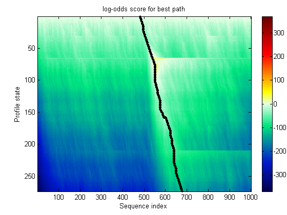

Sequence comparison is a key tool in bioinformatics. The objective of a HMM profile is to statistically model patterns in biological sequences by identifying combinations of matches, in-dels, and gaps in the alignment of a query sequence to a profile model. HMM profile analysis can be used for multiple sequence alignment, for a database search, to analyze sequence composition and pattern segmentation, and to predict protein structure and locate genes by predicting open reading frames. This demonstration shows how HMM profiles are used to characterize protein families.
Starting with an already built HMM of a protein family, retrieve the model for the well-known 7-fold transmembrane receptor from the Sanger Institute database. The PFAM key number is PF00002. Also retrieve the pre-aligned sequences used to train this model. More information about the PFAM database can be found at http://www.sanger.ac.uk/.
hmm_7tm = gethmmprof(2) seqs = gethmmalignment(2,'type','seed');
hmm_7tm =
Name: '7tm_2'
PfamAccessionNumber: 'PF00002'
ModelDescription: '7 transmembrane receptor (Secretin family)'
ModelLength: 274
Alphabet: 'AA'
MatchEmission: [274x20 double]
InsertEmission: [274x20 double]
NullEmission: [1x20 double]
BeginX: [275x1 double]
MatchX: [273x4 double]
InsertX: [273x2 double]
DeleteX: [273x2 double]
FlankingInsertX: [2x2 double]
LoopX: [2x2 double]
NullX: [2x1 double]
Models and alignments can also be stored and parsed in later directly from the files.
hmm_7tm = pfamhmmread('pf00002.ls'); %<-- HMMER 2.0 formatted file seqs = fastaread('pf00002.fa'); %<-- FASTA formatted file
If the Sanger site is not accessible, mirror sites can be accessed using their complete URL.
pfamhmmread('http://pfam.wustl.edu/cgi-bin/gethmm?name=7tm_2&type=fs');
Display the names and contents of the loaded sequences using the disp command.
disp([char(seqs.Header) char(seqs.Sequence)])
Q9YHC6/126-382 FGAIKTGYTIGHSLS.LISLTAAMIILCIFR................KLHCTRNYIHMHLFMSFIMRAIAVFIKDIVLFESG...........ESDHCHVGS........................VGCKAAMVFFQYCIMANFFWLLVEGLYLHNLLVIS.....FFSEKKYFWWYILIGWGAPSVFITAWSLAR...............VYFEDTGC.WDT..IESHLWWIIKTPILVSILVNFILFICIIRILVQKLH......SPDVGRNENSQY...................................................TRLAKSTLLLIPLFGVHYIMFAFFPDNFK.....VEVKLVFELILGSFQGFVVAVLYCFLNGEV VIPR_RAT/140-397 YNTVKTGYTIGYSLS.LASLLVAMAILSLFR................KLHCTRNYIHMHLFMSFILRATAVFIKDMALFNSG...........EIDHCSEAS........................VGCKAAVVFFQYCVMANFFWLLVEGLYLYTLLAVS.....FFSERKYFWGYILIGWGVPSVFITIWTVVR...............IYFEDFGC.WDTI.INSSLWWIIKAPILLSILVNFVLFICIIRILVQKLR......PPDIGKNDSSPY...................................................SRLAKSTLLLIPLFGIHYVMFAFFPDNFK.....AQVKMVFELVVGSFQGFVVAILYCFLNGEV VIPR_CARAU/100-359 FRSVKIGYTIGHSVS.LISLTTAIVILCMSR................KLHCTRNYIHMHLFVSFILKAIAVFVKDAVLYDVIQ..........ESDNCSTAS........................VGCKAVIVFFQYCIMASFFWLLVEGLYLHALLAVS.....FFSERKYFWWYILIGWGGPTIFIMAWSFAK...............AYFNDVGC.WDIIENSDLFWWIIKTPILASILMNFILFICIIRILRQKIN......CPDIGRNESNQY...................................................SRLAKSTLLLIPLFGINFIIFAFIPENIK.....TELRLVFDLILGSFQGFVVAVLYCFLNGEV VIPS_HUMAN/123-382 YILVKAIYTLGYSVS.LMSLATGSIILCLFR................KLHCTRNYIHLNLFLSFILRAISVLVKDDVLYSSS...........GTLHCPDQPS........S.............WVGCKLSLVFLQYCIMANFFWLLVEGLYLHTLLVA......MLPPRRCFLAYLLIGWGLPTVCIGAWTAAR...............LYLEDTGC.WDTN.DHSVPWWVIRIPILISIIVNFVLFISIIRILLQKLT......SPDVGGNDQSQY...................................................KRLAKSTLLLIPLFGVHYMVFAVFPISIS.....SKYQILFELCLGSFQGLVVAVLYCFLNSEV PACR_MOUSE/150-435 YLSVKALYTVGYSTS.LVTLTTAMVILCRFR................KLHCTRNFIHMNLFVSFMLRAISVFIKDWILYAEQ...........DSSHCFVST........................VECKAVMVFFHYCVVSNYFWLFIEGLYLFTLLVET.....FFPERRYFYWYTIIGWGTPTVCVTVWAVLR...............LYFDDAGC.WDMN.DSTALWWVIKGPVVGSIMVNFVLFIGIIIILVQKLQ......SPDMGGNESSIYFS.......................CVQKCYCKPQRAQQHSCKMSELSTITLRLARSTLLLIPLFGIHYTVFAFSPENVS.....KRERLVFELGLGSFQGFVVAVLYCFLNGEV SCRC_RABIT/135-391 LLKLKVMYTVGYSSS.LVMLLVALGILCAFR................RLHCTRNYIHMHLFLSFILRALSNFIKDAVLFSSD...........DAIHCDAHR........................VGCKLVMVFFQYCIMANYAWLLVEGLYLHSLLVVS.....FFSERKCLQGFVVLGWGSPAMFVTSWAVTR...............HFLEDSGC.WDIN.ANAAIWWVIRGPVILSILINFILFINILRILTRKLR......TQETRGQDMNHY...................................................KRLARSTLLLIPLFGVHYIVFVFSPEGA......MEIQLFFELALGSFQGLVVAVLYCFLNGEV O73768/133-390 LSTLKQLYTAGYATS.LISLITAVIIFTCFR................KFHCTRNYIHINLFVSFILRATAVFIKDAVLFSDE...........TQNHCLMST........................VACKTAVTFFQFCILTNYFWLLVEGLYLQTILTLT.....FVSQRKYFWWYILIGWGVPSVVLIVWVLTR...............QFYDNRGC.WDDT.DNMNIWWIIKGPITVSLIANIIIFLNVIRILVQKLK......SPGVGGNDTGHF...................................................MRLAKSTLFLIPLFGMHYTLFAFLPENTG.....EIVRFYIELGLGSFQGFVVALLYCFLNGDV GRFR_MOUSE/126-383 FSTVKIIYTTGHSIS.IVALCVAIAILVALR................RLHCPRNYIHTQLFATFILKASAVFLKDAAIFQGD...........STDHCSMST........................VLCKVSVAISHLATMTNFSWLLAEAVYLSCLLAST.....SPRSKPAFWWLVLAGWGLPVLCTGTWVGCK...............HSFEDTEC.WDLD.NSSPCWWIIKGPIVLSVGVNFGLFLNIICILLRKLE......PAQGGLHTRAQY...................................................WRLSKSTLLLIPLFGIHYIIFNFLPDSAG.....LDIRVPLELGLGSFQGFIVAVLYCFLNQEV PTR2_HUMAN/141-420 FERLYVMYTVGYSIS.FGSLAVAILIIGYFR................RLHCTRNYIHMHLFVSFMLRATSIFVKDRVVHAHIGVKELESLIMQDDPQNSIEATSVDKSQYI................GCKIAVVMFIYFLATNYYWILVEGLYLHNLIFVA.....FFSDTKYLWGFILIGWGFPAAFVAAWAVAR...............ATLADARC.WELS..AGDIKWIYQAPILAAIGLNFILFLNTVRVLATKIW......ETNAVGHDTRKQ..................................................YRKLAKSTLVLVLVFGVHYIVFVCLPHS.FT.GLGWEIRMHCELFFNSFQGFFVSIIYCYCNGEV PTRR_HUMAN/184-466 FDRLGMIYTVGYSVS.LASLTVAVLILAYFR................RLHCTRNYIHMHLFLSFMLRAVSIFVKDAVLYSGATLDEAERLT.EEELRAIAQAPPPPATAAAG.............YAGCRVAVTFFLYFLATNYYWILVEGLYLHSLIFMA.....FFSEKKYLWGFTVFGWGLPAVFVAVWVSVR...............ATLANTGC.WDLS..SGNKKWIIQVPILASIVLNFILFINIVRVLATKLR......ETNAGRCDTRQQ..................................................YRKLLKSTLVLMPLFGVHYIVFMATPYTEVS.GTLWQVQMHYEMLFNSFQGFFVAIIYCFCNGEV GLP2_RAT/175-443 LYTLQLMYTVGYSVS.LISLFLALTLFLFLR................KLHCTRNYIHMNLFASFILKVLAVLVKDMVSHNSYSKRPDDESGWMSYLSETSVS..........................CRSVQVLLHYFVGTNHLWLLVEGLYLHTLLEPT.....VFPERRLWPKYLVVGWAFPMLFVIPWGFAR...............AHLENTRC.WATN.GNLKIWWIIRGPMLLCVTVNFFIFLKILKLLISKLK......AHQMCFRDYKYR.....................................................LAKSTLLLIPLLGVHEVLFTFFPDDQVQ.GFSKRIRLFIQLTLSSVHGFLVALQYGFANGEV GLR_HUMAN/138-407 YSSFQVMYTVGYSLS.LGALLLALAILGGLS................KLHCTRNAIHANLFASFVLKASSVLVIDGLLRTRYSQKIGDDLSVSTWLSDGAVAG.........................CRVAAVFMQYGIVANYCWLLVEGLYLHNLLGLA.....TLPERSFFSLYLGIGWGAPMLFVVPWAVVK...............CLFENVQC.WTSN.DNMGFWWILRFPVFLAILINFFIFVRIVQLLVAKLR......ARQMHHTDYKFR.....................................................LAKSTLTLIPLLGVHEVVFAFVTDEHAQ.GTLRSAKLFFDLFLSSFQGLLVAVLYCFLNKEV GIPR_HUMAN/134-399 LERLQVMYTVGYSLS.LATLLLALLILSLFR................RLHCTRNYIHINLFTSFMLRAAAILSRDRLLPR.PGPYLGDQ...ALALWNQALAA.........................CRTAQIVTQYCVGANYTWLLVEGVYLHSLLVLV.....GGSEEGHFRYYLLLGWGAPALFVIPWVIVR...............YLYENTQC.WERN.EVKAIWWIIRTPILMTILINFLIFIRILGILLSKLR......TRQMRCRDYRLR.....................................................LARSTLTLVPLLGVHEVVFAPVTEEQAR.GALRFAKLGFEIFLSSFQGFLVSVLYCFINKEV GLP1_RAT/141-409 LLSLYIIYTVGYALS.FSALVIASAILVSFR................HLHCTRNYIHLNLFASFILRALSVFIKDAALKWMYST.AAQQHQWDGLLSYQDSLG.........................CRLVFLLMQYCVAANYYWLLVEGVYLYTLLAFS.....VFSEQRIFKLYLSIGWGVPLLFVIPWGIVK...............YLYEDEGC.WTRN.SNMNYWLIIRLPILFAIGVNFLVFIRVICIVIAKLK......ANLMCKTDIKCR.....................................................LAKSTLTLIPLLGTHEVIFAFVMDEHAR.GTLRFVKLFTELSFTSFQGFMVAVLYCFVNNEV CALR_PIG/146-415 AYILYYLAIVGHSLS.ILTLLISLGIFMFLRYFNLLAPFNALLYPTRSISCQRVTLHKNMFLTYVLNSIIIIVHLVVIVPNGELVKRD.....................................PPICKVLHFFHQYMMSCNYFWMLCEGVYLHTLIVVS.....VFAEGQRLWWYHVLGWGFPLIPTTAHAITR...............AVLFNDNC.WLSVDT..NLLYIIHGPVMAALVVNFFFLLNILRVLVKKLK......ESQEAESHMYLK.....................................................AVRATLILVPLLGVQFVVLPWRPSTP....LLGKIYDYVVHSLIHFQGFFVAIIYCFCNHEV CALR_RAT/145-435 AYVLYYLALVGHSMS.IAALIASMGIFLFFK................NLSCQRVTLHKNMFLTYILNSIIIIIHLVEVVPNGDLVRRDPMHIFHHNTYMWTMQWELSPPLPLSAHEGKMDPHDSEVISCKILHFFHQYMMACNYFWMLCEGIYLHTLIVMA.....VFTEDQRLRWYYLLGWGFPIVPTIIHAITR...............AVYYNDNC.WLSTET..HLLYIIHGPVMAALVVNFFFLLNIVRVLVTKMR......QTHEAEAYMYLK.....................................................AVKATMVLVPLLGIQFVVFPWRPSNK....VLGKIYDYLMHSLIHFQGFFVATIYCFCNHEV CGRR_HUMAN/138-391 ALNLFYLTIIGHGLS.IASLLISLGIFFYFK................SLSCQRITLHKNLFFSFVCNSVVTIIHLTAVANNQALVATN.....................................PVSCKVSQFIHLYLMGCNYFWMLCEGIYLHTLIVVA.....VFAEKQHLMWYYFLGWGFPLIPACIHAIAR...............SLYYNDNC.WISSDT..HLLYIIHGPICAALLVNLFFLLNIVRVLITKLK......VTHQAESNLYMK.....................................................AVRATLILVPLLGIEFVLIPWRPEGK....IAEEVYDYIMHILMHFQGLLVSTIFCFFNGEV DIHR_ACHDO/130-393 DAAMAFVFFVGFCLS.LVAIAVAIWIFLYFK................DLRCLRNTIHTNLMATYICNDATWIISAV.VQEYVENG.........................................GLCSVLAVLMHYFYLTNFFWMFVEGLYLFLLVVAT.....FTGEKVKLQIYIIIGWGIPGVIVVTWAIIKHLGKTAPDNAGESHPMVLLIKHCPWMAED...YFDWIHQAPVITVLAVNLVFLFSIMWVLITKLQ......SANTAETQQYRK.....................................................ATKALLVLFPLLGITYILMMQGPMDG....VAGHVFRNAQALLLSLQGFTVALFYCFLNTEV DIHR_MANSE/83-351 TDVASLIYLAGYSLS.LAVLSLAVFVFLYFK................DLRCLRNTIHTNLMSTYILSACSWILNLV.LQNWSDESQQD.....................................QTSCMILVICMNYFYLTNFFWMLVEGLYLYMLVVET.....FTAENIKLKVYTTIGWGAPAVFITIWVISRCFVNVLPSTGPDGLAMFPEAKMCIWMHEH...QVDWIHKAPALVGLALNLFFLIRIMWVLITKLR......SANTLETEQYRK.....................................................ATKALLVLIPLLGITNLLVLCGPSDDS...WFAYAFDYTRALMLSTQGFTVALFYCFMNTEV CRF2_XENLA/115-368 YKIALIINYLGHCIS.ILALVIAFLLFLCLR................SIRCLRNIIHWNLITTFILRNIMWFLLQM.IDHNIHESNE.......................................VWCRCITTIYNYFVVTNFFWMFVEGCYLHTAIVMT.....YSTDKLRKWVFLFIGWCIPSPIIVTWAICK...............LFYENEQC.WIGKEPGKYIDYIYQGRVILVLLINFVFLFNIVRILMTKLR......ASTTSETIQYRK.....................................................AVKATLVLLPLLGITYMLFFVNPGEDD...VSQIVFIYFNSFLQSFQGFFVSVFYCFLNGEV CRF1_RAT/116-370 YHVAVIINYLGHCIS.LVALLVAFVLFLRLR................SIRCLRNIIHWNLISAFILRNATWFVVQLTVSPEVHQSNV.......................................AWCRLVTAAYNYFHVTNFFWMFGEGCYLHTAIVLT.....YSTDRLRKWMFVCIGWGVPFPIIVAWAIGK...............LHYDNEKC.WFGKRPGVYTDYIYQGPMILVLLINFIFLFNIVRILMTKLR......ASTTSETIQYRK.....................................................AVKATLVLLPLLGITYMLFFVNPGEDE...VSRVVFIYFNSFLESFQGFFVSVFYCFLNSEV YQ44_CAEEL/267-539 ARNARKLEFVGLGLS.LVSLILAISIFSYFR................RLRVFRNLLHLHLMIAMLMVVILRLVLYIDLIFTGENGPHTN...SAEGKTINTMP.......................IVCEGMFFFLEYFKTVTFCWMFLEGIYLNNQIVFG.....FFNSEPKLLPYFIAGYGIPLVHTMLWLLVVLIK............KDFKVERCLGSYY..LEPEFWILDGPRMAELVINLFFICNVIRVLYSKVR.....ESNNTSEAGLKKS......................................................VKAAMMLLPLLGVPNIMQTIPFAPTRDNIMVFAVWTYTASFTYMYQGLMVASIYCFTNKEV YOW3_CAEEL/219-477 VEARILAGLLTYSAS.VIFLIPAVFLLTLLR...............PIRCQPMFILHRHLLISCLLYGAFYLITVSLFVVNDAPLSSQVFQN................................HLFCRLLFSIQLRYLRLTNFTWMLAEAVYLWRLLHTA.....QHSEGETLRSYKVICWGVPGVITVVYIFVR...............SLNDDVGMCWIENSTVAWIEWMIITPSLLAMGVNLLLLGLIVYILVKKLR.....CDPHLERIQYRK......................................................AVRGALMLIPVFGVQQLLTIYRFSN........TYYQVTDQSLNGLQGMFVSFIVCYTNRSV O95966/400-659 KHYLSLLSYVGCVVSALACLVTIAAYLCSRR................KPRDYTIKVHMNLLLAVFLLDTSFLLSEPVALTGSEAG...........................................CRASAIFLHFSLLTCLSWMGLEGYNLYRLVVEV....FGTYVPGYLLKLSAMGWGFPIFLVTLVALVDVDNYGPIILAVHRTPEGVIYPSMCWIRD...SLVSYITNLGLFSLVFLFNMAMLATMVVQILRLR.......PHTQKWS.........................................................HVLTLLGLSLVLGLPWALIFFSFASG....TFQLVVLYLFSIITSFQGFLIFIWYWSMRLQA Q10922/771-1017 ASALDVVSTIGCAIS.IVCLALSVCVFTFFR................NLQNVRNSIHRNLCLCLLIAELVFVIGMDRTGNRTG.............................................CGVVAILLHYFFLSSFCWMLLEGYQLYMML.....IQVFEPNRTRIFLYYLFCYGTPAVVVAISAGIKWE..............DYGTDSYCWIDT..STPTIWAFVAPIIVIIAANIIFLLIALKVVLSVQS......RDRTKWGRIIG......................................................WLKGSATLLCLLGITWIFGFLTAVKGG....TGTAFAWIFTILNCTQGIFIFVLHVVLNEKV O97819/874-1121 DLLLDVITWVGILLS.LVCLLICIFTFCFFR................GLQSDRNTIHKNLCISLFVAELLFLIGINRTDQPIA.............................................CAVFAALLHFFFLAAFTWMFLEGVQLYIML.....VEVFESEHSRRKYFYLVGYGMPALIVAVSAAVDYR..............SYGTDKVCWLRL..DTYFIWSFIGPATLIIMLNVIFLGIALYKMFHHTA....ILKPESGCLDNI.....................................................KSWVIGAIALLCLLGLTWAFGLMYINE......STVIMAYLFTIFNSLQGMFIFIFHCVLQKKV O97802/769-1016 ELLLTVITWVGIVIS.LVCLAICIFTFCFFR................GLQSDRNTIHKNLCINLFIAEFIFLIGIDKTKYMIA.............................................CPIFAGLLHFFFLAAFAWMCLEGVQLYLML.....VEVFESEYSRKKYYYVAGYLFPATVVGVSAAIDYK..............SYGTEKACWLHV..DNYFIWSFIGPVTFIILLNIIFLVITLCKMVKHSN....TLKPDSSRLENIK.....................................................SWVLGAFALLCLLGLTWSFGLLFINE......ETIVMAYLFTIFNAFQGVFIFIFHCALQKKV Q17505/548-799 QTLLTLLTYVGCIIS.IICLLLTFFAYLIFS................RNGGDRVFIHENLCLSLAIAEITFLAGITRTEDSLQ.............................................CGIIAVALMYMFLSALTWMLLEGYHIHRML.....TEVFPSDP.RRFTYLLVGYIPPAIITLVAYLYNSD..............GFGTPDHCWLST..QNNFIWFFAGPACFIFCANSLVLVKTLCTVYQHTSGGYLPCRHDVDSGRSIR.....................................................NWVKGSLALASLLGVTWIFGLFWVEDS.....RSIVMAYVFTISNSLQGLFIFLFHVVFAEKM Q9Z0M6/526-777 DPRLELITKVGLLLS.LICLLLCILTFLLVK................PIQSSRTMVHLHLCICLFLGSIIFLVGVENEGGEVGL...........................................RCRLVAMMLHFCFLAAFCWMALEGVELYFLV.....VRVFQGQGLSTWQRCLIGYGVPLLIVAISMAVVKMD.............GYGHATYCWLDFR.KQGFLWSFSGPVAFIIFCNAAIFVITVWKLTKKFS....EINPNMKKLRKAR.....................................................VLTITAIAQLLVLGCTWGFGLFLFNP......HSTWLSYIFTLLNCLQGLFLYVMLCLLNKKV CD97_HUMAN/544-793 DWKLTLITRVGLALS.LFCLLLCILTFLLVR................PIQGSRTTIHLHLCICLFVGSTIFLAGIENEGGQVGL...........................................RCRLVAGLLHYCFLAAFCWMSLEGLELYFLV.....VRVFQGQGLSTRWLCLIGYGVPLLIVGVSAAIYSK..............GYGRPRYCWLDF..EQGFLWSFLGPVTFIILCNAVIFVTTVWKLTQKFS....EINPDMKKLKKAR.....................................................ALTITAIAQLFLLGCTWVFGLFIFDD......RSLVLTYVFTILNCLQGAFLYLLHCLLNKKV EMR1_HUMAN/599-851 DFSLYIISHVGIIIS.LVCLVLAIATFLLCR................SIRNHNTYLHLHLCVCLLLAKTLFLAGIHKTDNKTG.............................................CAIIAGFLHYLFLACFFWMLVEAVILFLMVRNLKVVNYFSSRNIKMLHICAFGYGLPMLVVVISASVQPQ..............GYGMHNRCWLNT..ETGFIWSFLGPVCTVIVINSLLLTWTLWILRQRLS....SVNAEVSTLKDTR.....................................................LLTFKAFAQLFILGCSWVLGIFQIGP......VAGVMAYLFTIINSLQGAFIFLIHCLLNGQV CLR1_MOUSE/2480-2723VLPLKIITYAALSLS.LVALLVAFVLLSLVR................TLRSNLHSIHKNLIAALFFSQLIFMVGINQTENPFL.............................................CTVVAILLHYVSMGTFAWTLVENLHVYRML.....TEVRNIDTGPMRFYHVVGWGIPAIVTGLAVGLDPQ..............GYGNPDFCWLSL..QDTLIWSFAGPVGTVIIINTVIFVLSAKVSCQRKH.......HYYERKGVVS......................................................MLRTAFLLLLLVTATWLLGLLAVNS......DTLSFHYLFAAFSCLQGIFVLLFHCVAHREV CLR3_RAT/2534-2777 LELLAVFTHVVVAAS.VTALVLTAAVLLSLR................SLKSNVRGIHANVAAALGVAELLFLLGIHRTHNQLL.............................................CTVVAILLHYFFLSTFAWLLVQGLHLYRMQ.....VEPRNVDRGAMRFYHALGWGVPAVLLGLAVGLDPE..............GYGNPDFCWISI..HEPLIWSFAGPIVLVIVMNGIMFLLAARTSCSTGQ.......REAKKTSVLR......................................................TLRSSFLLLLLVSASWLFGLLAVNH......SVLAFHYLHAGLCGLQGLAVLLLFCVLNADA BAI2_HUMAN/917-1197 AGSPSVPLVIGCAVSCMALLTLLAIYAAFWR................FIKSERSIILLNFCLSILASNILILVGQSRVLSKGV.............................................CTMTAAFLHFFFLSSFCWVLTEAWQSYLAV.....I.GRMRTRLVRKRFLCLGWGLPALVVAVSVGFTRTK.............GYGTSSYCWLSL..EGGLLYAFVGPAAVIVLVNMLIGIIVFNKLMARDGISDKSKKQRAGSERCPWASLLLPCSACGAVPSPLLSSASARNA..........................MASLWSSCVVLPLLALTWMSAVLAMTDR.....RSVLFQALFAVFNSAQGFVITAVHCFLRREV BAI1_HUMAN/944-1191 ATLPSVTLIVGCGVSSLTLLMLVIIYVSVWR................YIRSERSVILINFCLSIISSNALILIGQTQTRNKVM.............................................CTLVAAFLHFFFLSSFCWVLTEAWQSYMAV.....T.GHLRNRLIRKRFLCLGWGLPALVVAISVGFTKAK.............GYSTMNYCWLSL..EGGLLYAFVGPAAAVVLVNMVIGILVFNKLVSKDGITDKKLKERAG...........................................................ASLWSSCVVLPLLALTWMSAVLAVTDR.....RSALFQILFAVFDSLEGFVIVMVHCILRREV O00406/622-883 MMALTFITYIGCGLS.SIFLSVTLVTYIAFEK...............IRRDYPSKILIQLCAALLLLNLVFLLDSWIALYKMQG...........................................LCISVAVFLHYFLLVSFTWMGLEAFHMYLALVKV....FNTYIRKYILKFCIVGWGVPAVVVTIILTISPDNYG...LGSYGKFPNGSPDDFCWINN..NAVFYITVVGYFCVIFLLNVSMFIVVLVQLCRIKK......KKQLGAQRKTS....................................................IQDLRSIAGLTFLLGITWGFAFFAWGP......VNVTFMYLFAIFNTLQGFFIFIFYCVAKENV MTH_DROME/211-480 .IVPSITGQTVVMISSLICMVLTIAVYLFVK................KLQNLHGKCFICYMVCLFMGYLFLLLDLWQISISF..............................................CKPAGFLGYFFVMAAFFWLSVISLHLWNTFRGSSHKANRFLFEHRFLAYNTYAWGMAVVLTGITVLADNIVENQDWN......PRVGHEGHCWIYT.QAWSAMLYFYGPMVFLIAFNITMFILTAKRILGVKKDIQNFAHRQERKQKLNSD...................................................KQTYTFFLRLFIIMGLSWSLEIGSYFSQSN..QTWANVFLVADYLNWSQGIIIFILFVLKRST.
To test the profile HMM alignment tool, first erase the periods in sequences used to format the downloaded aligned sequences. Doing this removes the alignment information from the sequences.
for sn = 1:length(seqs) ind = seqs(sn).Sequence ~= '.'; seqs(sn).Sequence = seqs(sn).Sequence(ind); end
Now align all the proteins to the HMM profile.
fprintf('Aligning sequences ') scores = zeros(length(seqs),1); for sn=1:length(seqs) fprintf('.') [scores(sn),seqs(sn).Aligned]=hmmprofalign(hmm_7tm,seqs(sn).Sequence); end
Aligning sequences .....................................
Next, send the results to the Help Browser to better explore the new multiple alignment. Columns marked with * at the bottom indicate when the model was in a "match" or "delete" state.
hmmprofmerge(seqs,scores)
0 10 20 30 40 50 60 70 80 90 100 110 120 130 140 150 160 170 180 190 200 210 220 230 240 250 260 270
1 Q9YHC6/126-382 533.914 FGAIKTGYTIGHSLS-LISLTAAMIILCIFR................KLHCT.RNYIHMHLFMSFIMRAIAVFIKDIVLFESG...................................esdhchvgsvgCKAAM.VFFQYCIMANFFWLLVEGLYLHNLLVIS..---FFSEKKYFWWYILIGWGAPSVFITAWSLAR-----.----.--.-VYFEDTGC-WDTI--ESHLWWIIKTPILVSILVNFILFICIIRILVQKLH-.-.--SPDVGRNENSQY............................TRLAKSTLLLIPLFGVHYIMFAFFPDNFK-.---VEVKLVFELILGSFQGFVVAVLYCFLNGEV
2 VIPR_RAT/140-397 529.905 YNTVKTGYTIGYSLS-LASLLVAMAILSLFR................KLHCT.RNYIHMHLFMSFILRATAVFIKDMALFNSG...................................eidhcseasvgCKAAV.VFFQYCVMANFFWLLVEGLYLYTLLAVS..---FFSERKYFWGYILIGWGVPSVFITIWTVVR-----.----.--.-IYFEDFGC-WDTI-INSSLWWIIKAPILLSILVNFVLFICIIRILVQKLR-.-.--PPDIGKNDSSPY............................SRLAKSTLLLIPLFGIHYVMFAFFPDNFK-.---AQVKMVFELVVGSFQGFVVAILYCFLNGEV
6 SCRC_RABIT/135-391 514.745 LLKLKVMYTVGYSSS-LVMLLVALGILCAFR................RLHCT.RNYIHMHLFLSFILRALSNFIKDAVLFSSD...................................daihcdahrvgCKLVM.VFFQYCIMANYAWLLVEGLYLHSLLVVS..---FFSERKCLQGFVVLGWGSPAMFVTSWAVTR-----.----.--.-HFLEDSGC-WDIN-ANAAIWWVIRGPVILSILINFILFINILRILTRKLR-.-.--TQETRGQDMNHY............................KRLARSTLLLIPLFGVHYIVFVFSPEG---.--AMEIQLFFELALGSFQGLVVAVLYCFLNGEV
3 VIPR_CARAU/100-359 501.185 FRSVKIGYTIGHSVS-LISLTTAIVILCMSR................KLHCT.RNYIHMHLFVSFILKAIAVFVKDAVLYDVI..................................qesdncstasvgCKAVI.VFFQYCIMASFFWLLVEGLYLHALLAVS..---FFSERKYFWWYILIGWGGPTIFIMAWSFAK-----.----.--.-AYFNDVGC-WDIIENSDLFWWIIKTPILASILMNFILFICIIRILRQKIN-.-.--CPDIGRNESNQY............................SRLAKSTLLLIPLFGINFIIFAFIPENIK-.---TELRLVFDLILGSFQGFVVAVLYCFLNGEV
5 PACR_MOUSE/150-435 499.246 YLSVKALYTVGYSTS-LVTLTTAMVILCRFR................KLHCT.RNFIHMNLFVSFMLRAISVFIKDWILYAEQ...................................dsshcfvstveCKAVM.VFFHYCVVSNYFWLFIEGLYLFTLLVET..---FFPERRYFYWYTIIGWGTPTVCVTVWAVLR-----.----.--.-LYFDDAGC-WDMN-DSTALWWVIKGPVVGSIMVNFVLFIGIIIILVQKLQ-.-.--SPDMGGNESSIYfscvqkcyckpqraqqhsckmselstitLRLARSTLLLIPLFGIHYTVFAFSPEN---.-VSKRERLVFELGLGSFQGFVVAVLYCFLNGEV
7 O73768/133-390 494.724 LSTLKQLYTAGYATS-LISLITAVIIFTCFR................KFHCT.RNYIHINLFVSFILRATAVFIKDAVLFSDE...................................tqnhclmstvaCKTAV.TFFQFCILTNYFWLLVEGLYLQTILTLT..---FVSQRKYFWWYILIGWGVPSVVLIVWVLTR-----.----.--.-QFYDNRGC-WDDT-DNMNIWWIIKGPITVSLIANIIIFLNVIRILVQKLK-.-.--SPGVGGNDTGHF............................MRLAKSTLFLIPLFGMHYTLFAFLPEN---.-TGEIVRFYIELGLGSFQGFVVALLYCFLNGDV
10 PTRR_HUMAN/184-466 491.454 FDRLGMIYTVGYSVS-LASLTVAVLILAYFR................RLHCT.RNYIHMHLFLSFMLRAVSIFVKDAVLYSGA..............tldeaerlteeelraiaqappppataaagyagCRVAV.TFFLYFLATNYYWILVEGLYLHSLIFMA..---FFSEKKYLWGFTVFGWGLPAVFVAVWVSVR-----.----.--.-ATLANTGC-WDLS--SGNKKWIIQVPILASIVLNFILFINIVRVLATKLR-.-.--ETNAGRCDTRQQ...........................yRKLLKSTLVLMPLFGVHYIVFMATPYTEVS.GTLWQVQMHYEMLFNSFQGFFVAIIYCFCNGEV
14 GLP1_RAT/141-409 484.279 LLSLYIIYTVGYALS-FSALVIASAILVSFR................HLHCT.RNYIHLNLFASFILRALSVFIKDAALKWMY..........................staaqqhqwdgllsyqdslgCRLVF.LLMQYCVAANYYWLLVEGVYLYTLLAFS..---VFSEQRIFKLYLSIGWGVPLLFVIPWGIVK-----.----.--.-YLYEDEGC-WTRN-SNMNYWLIIRLPILFAIGVNFLVFIRVICIVIAKLK-.-.--ANLMCKTDIKCR............................--LAKSTLTLIPLLGTHEVIFAFVMDEHAR.GTLRFVKLFTELSFTSFQGFMVAVLYCFVNNEV
4 VIPS_HUMAN/123-382 483.723 YILVKAIYTLGYSVS-LMSLATGSIILCLFR................KLHCT.RNYIHLNLFLSFILRAISVLVKDDVLYSSS................................gtlhcpdqpsswvgCKLSL.VFLQYCIMANFFWLLVEGLYLHTLL-VA..---MLPPRRCFLAYLLIGWGLPTVCIGAWTAAR-----.----.--.-LYLEDTGC-WDTN-DHSVPWWVIRIPILISIIVNFVLFISIIRILLQKLT-.-.--SPDVGGNDQSQY............................KRLAKSTLLLIPLFGVHYMVFAVFPIS---.-ISSKYQILFELCLGSFQGLVVAVLYCFLNSEV
11 GLP2_RAT/175-443 470.512 LYTLQLMYTVGYSVS-LISLFLALTLFLFLR................KLHCT.RNYIHMNLFASFILKVLAVLVKDMVSHNSY..........................skrpddesgwmsylsetsvsCRSVQ.VLLHYFVGTNHLWLLVEGLYLHTLLEPT..---VFPERRLWPKYLVVGWAFPMLFVIPWGFAR-----.----.--.-AHLENTRC-WATN-GNLKIWWIIRGPMLLCVTVNFFIFLKILKLLISKLK-.-.--AHQMCFRDYKYR............................--LAKSTLLLIPLLGVHEVLFTFFPDDQVQ.GFSKRIRLFIQLTLSSVHGFLVALQYGFANGEV
13 GIPR_HUMAN/134-399 470.356 LERLQVMYTVGYSLS-LATLLLALLILSLFR................RLHCT.RNYIHINLFTSFMLRAAAILSRDRLLPRPG.............................pylgdqalalwnqalaaCRTAQ.IVTQYCVGANYTWLLVEGVYLHSLLVLV..---GGSEEGHFRYYLLLGWGAPALFVIPWVIVR-----.----.--.-YLYENTQC-WERN-EVKAIWWIIRTPILMTILINFLIFIRILGILLSKLR-.-.--TRQMRCRDYRLR............................--LARSTLTLVPLLGVHEVVFAPVTEEQAR.GALRFAKLGFEIFLSSFQGFLVSVLYCFINKEV
12 GLR_HUMAN/138-407 469.417 YSSFQVMYTVGYSLS-LGALLLALAILGGLS................KLHCT.RNAIHANLFASFVLKASSVLVIDGLLRTRY.........................sqkigddlsvstwlsdgavagCRVAA.VFMQYGIVANYCWLLVEGLYLHNLLGLA..---TLPERSFFSLYLGIGWGAPMLFVVPWAVVK-----.----.--.-CLFENVQC-WTSN-DNMGFWWILRFPVFLAILINFFIFVRIVQLLVAKLR-.-.--ARQMHHTDYKFR............................--LAKSTLTLIPLLGVHEVVFAFVTDEHAQ.GTLRSAKLFFDLFLSSFQGLLVAVLYCFLNKEV
9 PTR2_HUMAN/141-420 468.358 FERLYVMYTVGYSIS-FGSLAVAILIIGYFR................RLHCT.RNYIHMHLFVSFMLRATSIFVKDRVVHAHI................gvkeleslimqddpqnsieatsvdksqyigCKIAV.VMFIYFLATNYYWILVEGLYLHNLIFVA..---FFSDTKYLWGFILIGWGFPAAFVAAWAVAR-----.----.--.-ATLADARC-WELS--AGDIKWIYQAPILAAIGLNFILFLNTVRVLATKIW-.-.--ETNAVGHDTRKQ...........................yRKLAKSTLVLVLVFGVHYIVFVCLPHS-FT.GLGWEIRMHCELFFNSFQGFFVSIIYCYCNGEV
16 CALR_RAT/145-435 458.986 AYVLYYLALVGHSMS-IAALIASMGIFLFFK................NLSCQ.RVTLHKNMFLTYILNSIIIIIHLVEVVPNGdlvrrdpmhifhhntymwtmqwelspplplsahegkmdphdsevisCKILH.FFHQYMMACNYFWMLCEGIYLHTLIVMA..---VFTEDQRLRWYYLLGWGFPIVPTIIHAITR-----.----.--.-AVYYNDNC-WLST--ETHLLYIIHGPVMAALVVNFFFLLNIVRVLVTKMR-.-.--QTHEAEAYMYLK............................--AVKATMVLVPLLGIQFVVFPWRPSNK--.-VLGKIYDYLMHSLIHFQGFFVATIYCFCNHEV
20 CRF2_XENLA/115-368 454.215 YKIALIINYLGHCIS-ILALVIAFLLFLCLR................SIRCL.RNIIHWNLITTFILRNIMWFLLQM-IDHNI.......................................hesnevwCRCIT.TIYNYFVVTNFFWMFVEGCYLHTAIVMT..---YSTDKLRKWVFLFIGWCIPSPIIVTWAICK-----.----.--.-LFYENEQC-WIGKEPGKYIDYIYQGRVILVLLINFVFLFNIVRILMTKLR-.-.--ASTTSETIQYRK............................--AVKATLVLLPLLGITYMLFFVNPGEDD-.-VSQIVFIYFNSFLQSFQGFFVSVFYCFLNGEV
19 DIHR_MANSE/83-351 453.170 TDVASLIYLAGYSLS-LAVLSLAVFVFLYFK................DLRCL.RNTIHTNLMSTYILSACSWILNLV-LQNWS.....................................desqqdqtsCMILV.ICMNYFYLTNFFWMLVEGLYLYMLVVET..---FTAENIKLKVYTTIGWGAPAVFITIWVISRCFVNVlPSTGpDGlAMFPEAKMCIWMHEH---QVDWIHKAPALVGLALNLFFLIRIMWVLITKLR-.-.--SANTLETEQYRK............................--ATKALLVLIPLLGITNLLVLCGPSDDS-.-WFAYAFDYTRALMLSTQGFTVALFYCFMNTEV
21 CRF1_RAT/116-370 451.963 YHVAVIINYLGHCIS-LVALLVAFVLFLRLR................SIRCL.RNIIHWNLISAFILRNATWFVVQLTVSPEV.......................................hqsnvawCRLVT.AAYNYFHVTNFFWMFGEGCYLHTAIVLT..---YSTDRLRKWMFVCIGWGVPFPIIVAWAIGK-----.----.--.-LHYDNEKC-WFGKRPGVYTDYIYQGPMILVLLINFIFLFNIVRILMTKLR-.-.--ASTTSETIQYRK............................--AVKATLVLLPLLGITYMLFFVNPGEDE-.-VSRVVFIYFNSFLESFQGFFVSVFYCFLNSEV
26 O97819/874-1121 444.177 DLLLDVITWVGILLS-LVCLLICIFTFCFFR................GLQSD.RNTIHKNLCISLFVAELLFLIGINRTDQPI.............................................aCAVFA.ALLHFFFLAAFTWMFLEGVQLYIML---..VEVFESEHSRRKYFYLVGYGMPALIVAVSAAVDYR---.----.--.--SYGTDKVCWLRL--DTYFIWSFIGPATLIIMLNVIFLGIALYKMFHHTA-.-.ILKPESGCLDNIKS............................--WVIGAIALLCLLGLTWAFGLMYINE---.--STVIMAYLFTIFNSLQGMFIFIFHCVLQKKV
18 DIHR_ACHDO/130-393 443.173 DAAMAFVFFVGFCLS-LVAIAVAIWIFLYFK................DLRCL.RNTIHTNLMATYICNDATWIISAV-VQEYV.........................................engglCSVLA.VLMHYFYLTNFFWMFVEGLYLFLLVVAT..---FTGEKVKLQIYIIIGWGIPGVIVVTWAIIKHLGKTaPDNAgEShPMVLLIKHCPWMAE-D--YFDWIHQAPVITVLAVNLVFLFSIMWVLITKLQ-.-.--SANTAETQQYRK............................--ATKALLVLFPLLGITYILMMQGPMDG--.-VAGHVFRNAQALLLSLQGFTVALFYCFLNTEV
15 CALR_PIG/146-415 434.628 AYILYYLAIVGHSLS-ILTLLISLGIFMFLRyfnllapfnallyptrSISCQ.RVTLHKNMFLTYVLNSIIIIVHLVVIVPNG.....................................elvkrdppiCKVLH.FFHQYMMSCNYFWMLCEGVYLHTLIVVS..---VFAEGQRLWWYHVLGWGFPLIPTTAHAITR-----.----.--.-AVLFNDNC-WLSV--DTNLLYIIHGPVMAALVVNFFFLLNILRVLVKKLK-.-.--ESQEAESHMYLK............................--AVRATLILVPLLGVQFVVLPWRPSTP--.-LLGKIYDYVVHSLIHFQGFFVAIIYCFCNHEV
8 GRFR_MOUSE/126-383 430.347 FSTVKIIYTTGHSIS-IVALCVAIAILVALR................RLHCP.RNYIHTQLFATFILKASAVFLKDAAIFQGD...................................stdhcsmstvlCKVSV.AISHLATMTNFSWLLAEAVYLSCLLAST..---SPRSKPAFWWLVLAGWGLPVLCTGTWVGCK-----.----.--.-HSFEDTEC-WDLD-NSSPCWWIIKGPIVLSVGVNFGLFLNIICILLRKLE-.-.--PAQGGLHTRAQY............................WRLSKSTLLLIPLFGIHYIIFNFLPDSAG-.---LDIRVPLELGLGSFQGFIVAVLYCFLNQEV
27 O97802/769-1016 429.611 ELLLTVITWVGIVIS-LVCLAICIFTFCFFR................GLQSD.RNTIHKNLCINLFIAEFIFLIGIDKTKYMI.............................................aCPIFA.GLLHFFFLAAFAWMCLEGVQLYLML---..VEVFESEYSRKKYYYVAGYLFPATVVGVSAAIDYK---.----.--.--SYGTEKACWLHV--DNYFIWSFIGPVTFIILLNIIFLVITLCKMVKHSN-.-.TLKPDSSRLENIKS............................--WVLGAFALLCLLGLTWSFGLLFINE---.--ETIVMAYLFTIFNAFQGVFIFIFHCALQKKV
25 Q10922/771-1017 426.170 ASALDVVSTIGCAIS-IVCLALSVCVFTFFR................NLQNV.RNSIHRNLCLCLLIAELVFVIGMDRTGNRT.............................................gCGVVA.ILLHYFFLSSFCWMLLEGYQLYMML---..IQVFEPNRTRIFLYYLFCYGTPAVVVAISAGIKWE---.----.--.--DYGTDSYCWIDT--STPTIWAFVAPIIVIIAANIIFLLIALKVVLSVQS-.-.--RDRTKWGRIIG-............................--WLKGSATLLCLLGITWIFGFLTAVKGG-.--TGTAFAWIFTILNCTQGIFIFVLHVVLNEKV
17 CGRR_HUMAN/138-391 425.836 ALNLFYLTIIGHGLS-IASLLISLGIFFYFK................SLSCQ.RITLHKNLFFSFVCNSVVTIIHLTAVANNQ.....................................alvatnpvsCKVSQ.FIHLYLMGCNYFWMLCEGIYLHTLIVVA..---VFAEKQHLMWYYFLGWGFPLIPACIHAIAR-----.----.--.-SLYYNDNC-WISS--DTHLLYIIHGPICAALLVNLFFLLNIVRVLITKLK-.-.--VTHQAESNLYMK............................--AVRATLILVPLLGIEFVLIPWRPEGK--.-IAEEVYDYIMHILMHFQGLLVSTIFCFFNGEV
30 CD97_HUMAN/544-793 421.405 DWKLTLITRVGLALS-LFCLLLCILTFLLVR................PIQGS.RTTIHLHLCICLFVGSTIFLAGIENEGGQV...........................................glrCRLVA.GLLHYCFLAAFCWMSLEGLELYFLV---..VRVFQGQGLSTRWLCLIGYGVPLLIVGVSAAIYSK---.----.--.--GYGRPRYCWLDF--EQGFLWSFLGPVTFIILCNAVIFVTTVWKLTQKFS-.-.EINPDMKKLKKARA............................--LTITAIAQLFLLGCTWVFGLFIFDD---.--RSLVLTYVFTILNCLQGAFLYLLHCLLNKKV
31 EMR1_HUMAN/599-851 408.786 DFSLYIISHVGIIIS-LVCLVLAIATFLLCR................SIRNH.NTYLHLHLCVCLLLAKTLFLAGIHKTDNKT.............................................gCAIIA.GFLHYLFLACFFWMLVEAVILFLMVRNLkvVNYFSSRNIKMLHICAFGYGLPMLVVVISASVQPQ---.----.--.--GYGMHNRCWLNT--ETGFIWSFLGPVCTVIVINSLLLTWTLWILRQRLS-.-.SVNAEVSTLKDTR-............................-LLTFKAFAQLFILGCSWVLGIFQIGP---.--VAGVMAYLFTIINSLQGAFIFLIHCLLNGQV
29 Q9Z0M6/526-777 386.818 DPRLELITKVGLLLS-LICLLLCILTFLLVK................PIQSS.RTMVHLHLCICLFLGSIIFLVGVENEGGEV...........................................glrCRLVA.MMLHFCFLAAFCWMALEGVELYFLV---..VRVFQGQGLSTWQRCLIGYGVPLLIVAISMAVVKMD--.----.--.--GYGHATYCWLDFR-KQGFLWSFSGPVAFIIFCNAAIFVITVWKLTKKFS-.-.EINPNMKKLRKAR-............................-VLTITAIAQLLVLGCTWGFGLFLFNPH--.---STWLSYIFTLLNCLQGLFLYVMLCLLNKKV
28 Q17505/548-799 380.644 QTLLTLLTYVGCIIS-IICLLLTFFAYLIFS................RNGGD.RVFIHENLCLSLAIAEITFLAGITRTEDSL.............................................qCGIIA.VALMYMFLSALTWMLLEGYHIHRML---..TEVFPSDP-RRFTYLLVGYIPPAIITLVAYLYNSD---.----.--.--GFGTPDHCWLST--QNNFIWFFAGPACFIFCANSLVLVKTLCTVYQHTSGgYlPCRHDVDSGRSIR-............................-NWVKGSLALASLLGVTWIFGLFWVEDS--.--RSIVMAYVFTISNSLQGLFIFLFHVVFAEKM
36 O00406/622-883 371.001 MMALTFITYIGCGLS-SIFLSVTLVTYIAFE...............kIRRDY.PSKILIQLCAALLLLNLVFLLDSWIALYKM...........................................qglCISVA.VFLHYFLLVSFTWMGLEAFHMYLALVKV..--FNTYIRKYILKFCIVGWGVPAVVVTIILTISPDNYG.--LGsYGkFPNGSPDDFCWINN--NAVFYITVVGYFCVIFLLNVSMFIVVLVQLCRIKK-.-.--KKQLGAQRKTS-............................IQDLRSIAGLTFLLGITWGFAFFAWGP---.--VNVTFMYLFAIFNTLQGFFIFIFYCVAKENV
32 CLR1_MOUSE/2480-2723 369.396 VLPLKIITYAALSLS-LVALLVAFVLLSLVR................TLRSN.LHSIHKNLIAALFFSQLIFMVGINQTENPF.............................................lCTVVA.ILLHYVSMGTFAWTLVENLHVYRML---..TEVRNIDTGPMRFYHVVGWGIPAIVTGLAVGLDPQ---.----.--.--GYGNPDFCWLSL--QDTLIWSFAGPVGTVIIINTVIFVLSAKVSCQRKH-.-.---HYYERKGVVS-............................--MLRTAFLLLLLVTATWLLGLLAVNSD--.---TLSFHYLFAAFSCLQGIFVLLFHCVAHREV
33 CLR3_RAT/2534-2777 356.959 LELLAVFTHVVVAAS-VTALVLTAAVLLSLR................SLKSN.VRGIHANVAAALGVAELLFLLGIHRTHNQL.............................................lCTVVA.ILLHYFFLSTFAWLLVQGLHLYRMQ---..VEPRNVDRGAMRFYHALGWGVPAVLLGLAVGLDPE---.----.--.--GYGNPDFCWISI--HEPLIWSFAGPIVLVIVMNGIMFLLAARTSCSTGQ-.-.---REAKKTSVLR-............................--TLRSSFLLLLLVSASWLFGLLAVNH---.--SVLAFHYLHAGLCGLQGLAVLLLFCVLNADA
22 YQ44_CAEEL/267-539 350.461 ARNARKLEFVGLGLS-LVSLILAISIFSYFR................RLRVF.RNLLHLHLMIAMLMVVILRLVLYIDLIFTG..........................engphtnsaegktintmpivCEGMF.FFLEYFKTVTFCWMFLEGIYLNNQIVFG..---FFNSEPKLLPYFIAGYGIPLVHTMLWLLVVLIK--.----.--.-KDFKVERCLGSYY--LEPEFWILDGPRMAELVINLFFICNVIRVLYSKVR-.-.-ESNNTSEAGLKK-............................--SVKAAMMLLPLLGVPNIMQTIPFAPTRDnIMVFAVWTYTASFTYMYQGLMVASIYCFTNKEV
35 BAI1_HUMAN/944-1191 336.718 ATLPSVTLIVGCGVSSLTLLMLVIIYVSVWR................YIRSE.RSVILINFCLSIISSNALILIGQTQTRNKV.............................................mCTLVA.AFLHFFFLSSFCWVLTEAWQSYMAV--T..--GHLRNRLIRKRFLCLGWGLPALVVAISVGFTKAK--.----.--.--GYSTMNYCWLSL--EGGLLYAFVGPAAAVVLVNMVIGILVFNKLVSKDGItDkKLKERAG-------............................-ASLWSSCVVLPLLALTWMSAVLAVTDR--.--RSALFQILFAVFDSLEGFVIVMVHCILRREV
24 O95966/400-659 331.701 KHYLSLLSYVGCVVSALACLVTIAAYLCSRR................KPRDY.TIKVHMNLLLAVFLLDTSFLLSEPVALTGS...........................................eagCRASA.IFLHFSLLTCLSWMGLEGYNLYRLVVEV..--FGTYVPGYLLKLSAMGWGFPIFLVTLVALVDVDNYGpIILAvHRtPEGVIYPSMCWIRD---SLVSYITNLGLFSLVFLFNMAMLATMVVQILRLR-.-.---PHTQKWS----............................--HVLTLLGLSLVLGLPWALIFFSFASG--.-TFQLVVLYLFSIITSFQGFLIFIWYWSMRLQA
34 BAI2_HUMAN/917-1197 331.488 AGSPSVPLVIGCAVSCMALLTLLAIYAAFWR................FIKSE.RSIILLNFCLSILASNILILVGQSRVLSKG.............................................vCTMTA.AFLHFFFLSSFCWVLTEAWQSYLAV---..I-GRMRTRLVRKRFLCLGWGLPALVVAVSVGFTRTK--.----.--.--GYGTSSYCWLSL--EGGLLYAFVGPAAVIVLVNMLIGIIVFNKLMARDGIsDkSKKQRAGSERCPWA...slllpcsacgavpspllssasarnaMASLWSSCVVLPLLALTWMSAVLAMTDR--.--RSVLFQALFAVFNSAQGFVITAVHCFLRREV
23 YOW3_CAEEL/219-477 327.324 VEARILAGLLTYSAS-VIFLIPAVFLLTLLR................PIRCQpMFILHRHLLISCLLYGAFYLITVSLFVVND.................................aplssqvfqnhlfCRLLFsIQLRYLRLTNFTWMLAEAVYLWRLLHTA..---QHSEGETLRSYKVICWGVPGVITVVYIFVR-----.----.--.-SLNDDVGMCWIENSTVAWIEWMIITPSLLAMGVNLLLLGLIVYILVKKLR-.-.-CDPHLERIQYRK-............................--AVRGALMLIPVFGVQQLLTIYRFSN---.----TYYQVTDQSLNGLQGMFVSFIVCYTNRSV
37 MTH_DROME/211-480 287.692 -IVPSITGQTVVMISSLICMVLTIAVYLFVK................KLQNL.HGKCFICYMVCLFMGYLFLLLDLWQISISF..............................................CKPAG.FLGYFFVMAAFFWLSVISLHLWNTFRGSshKANRFLFEHRFLAYNTYAWGMAVVLTGITVLADNIVENqDWN-.--.-PRVGHEGHCWIYT-QAWSAMLYFYGPMVFLIAFNITMFILTAKRILGVKKDiQnFAHRQERKQKLNSD............................KQTYTFFLRLFIIMGLSWSLEIGSYFSQSN.-QTWANVFLVADYLNWSQGIIIFILFVLKRST-
******************************* ***** ****************************** ***** **************************** ************************************** **** ** **************************************************** * ************** ****************************** *********************************
Having a profile HHM which describes this family has several advantages over plain sequence comparison. Suppose that you have a new oligonucleotide that you want to relate to the 7-transmembrane receptor family. For this example, get a nucleotide sequence from NCBI and translate it to an amino acid sequence.
accs='NM_175642.2'; nts=getgenbank(accs,'sequenceonly',true);
If you don't have a live web connection you can load the data from the GeneBank formatted file: (uncomment the following lines)
% GBOUT = genbankread('nm175642.2.txt'); % nts = GBOUT.Sequence; NM1756422=nt2aa(nts,'frame',1); NM1756422(NM1756422 == '*') = []; seqdisp(NM1756422)
ans = 1 MKAVRNLLIY IFSTYLLVMF GFNAAQDFWC STLVKGVIYG SYSVSEMFPK NFTNCTWTLE 61 NPDPTKYSIY LKFSKKDLSC SNFSLLAYQF DHFSHEKIKD LLRKNHSIMQ LCSSKNAFVF 121 LQYDKNFIQI RRVFPTDFPG LQKKVEEDQK SFFEFLVLNK VSPSQFGCHV LCTWLESCLK 181 SENGRTESCG IMYTKCTCPQ HLGEWGIDDQ SLVLVNNVVL PLNEQTEGCL TQELQTTQVC 241 NLTREAKRPP KEEFGMMGDH TIKSQRPRSV HEKRVPQEQA DAAKFMAQTG ESGVEEWSQW 301 SACSVTCGQG SQVRTRTCVS PYGTHCSGPL RESRVCNNTA LCPVHGVWEE WSPWSLCSFT 361 CGRGQRTRTR SCTPPQYGGR PCEGPETHHK PCNIALCPVD GQWQEWSSWS HCSVTCSNGT 421 QQRSRQCTAA AHGGSECRGP WAESRECYNP ECTANGQWNQ WGHWSGCSKS CDGGWERRMR 481 TCQGAAVTGQ QCEGTGEEVR RCSEQRCPAP YEICPEDYLI SMVWKRTPAG DLAFNQCPLN 541 ATGTTSRRCS LSLHGVASWE QPSFARCISN EYRHLQHSIK EHLAKGQRML AGDGMSQVTK 601 TLLDLTQRKN FYAGDLLVSV EILRNVTDTF KRASYIPASD GVQNFFQIVS NLLDEENKEK 661 WEDAQQIYPG SIELMQVIED FIYIVGMGMM DFQNSYLMTG NVVASIQKLP AASVLTDINF 721 PMKGRKGMVD WARNSEDRVV IPKSIFTPVS SKELDESSVF VLGAVLYKNL DLILPTLRNY 781 TVINSKVIVV TIRPEPKTTD SFLEIELAHL ANGTLNPYCV LWDDSKSNES LGTWSTQGCK 841 TVLTDASHTK CLCDRLSTFA ILAQQPREIV MESSGTPSVT LIVGSGLSCL ALITLAVVYA 901 ALWRYIRSER SIILINFCLS IISSNILILV GQTQTHNKSI CTTTTAFLHF FFLASFCWVL 961 TEAWQSYMAV TGKIRTRLIR KRFLCLGWGL PALVVATSVG FTRTKGYGTD HYCWLSLEGG 1021 LLYAFVGPAA AVVLVNMVIG ILVFNKLVSR DGILDKKLKH RAGQMSEPHS GLTLKCAKCG 1081 VVSTTALSAT TASNAMASLW SSCVVLPLLA LTWMSAVLAM TDKRSILFQI LFAVFDSLQG 1141 FVIVMVHCIL RREVQDAFRC RLRNCQDPIN ADSSSSFPNG HAQIMTDFEK DVDIACRSVL 1201 HKDIGPCRAA TITGTLSRIS LNDDEEEKGT NPEGLSYSTL PGNVISKVII QQPTGLHMPM 1261 SMNELSNPCL KKENTELRRT VYLCTDDNLR GADMDIVHPQ ERMMESDYIV MPRSSVSTQP 1321 SMKEESKMNI GMETLPHERL LHYKVNPEFN MNPPVMDQFN MNLDQHLAPQ EHMQNLPFEP 1381 RTAVKNFMAS ELDDNVGLSR SETGSTISMS SLERRKSRYS DLDFEKVMHT RKRHMELFQE 1441 LNQKFQTLDR FRDIPNTSSM ENPAPNKNPW DTFKPPSEYQ HYTTINVLDT EAKDTLELRP 1501 AEWEKCLNLP LDVQEGDFQT EV
Try to relate it to the first sequence in the 7tm_2 multiple alignment using dot plots. Is there any evidence that they are related?
Q9YHC6 = seqs(1).Sequence; seqdotplot(Q9YHC6,NM1756422) ylabel(seqs(1).Header);xlabel('NM 175642.2'); set(gca,'Position',[0.05,0.02,0.92,0.75]);
One way of testing this is to use a sliding window dot plot.
seqdotplot(Q9YHC6,NM1756422,7,2) ylabel(seqs(1).Header);xlabel('NM 175642.2'); set(gca,'Position',[0.05,0.02,0.92,0.75]);
Dot plots only take exact matches into account. The Smith-Waterman algorithm can make use of scoring matrices. Scoring matrices can capture the probability of substitution of symbols. The sequences in this example are known to be only distantly related, so BLOSUM30 is a good choice for the scoring matrix.
[score, a1ignment] = swalign(Q9YHC6,NM1756422,'ScoringMatrix','blosum30')
score =
53
a1ignment =
GAIKTGYTIGHSLSLISLTAAMIILCIFRKLHCTRNYIHMHLFMSFIMRAIAVFIKDIVLFESGESDHCHVGSVGCKAAMVFFQYCIMANFFWLLVEGLYLHNLLVISFFSEKKYFW-WYILIGWGAPS-VFITAWSLARV--YFEDTGCWDTIESHLWWIIKTPILVSILVNFILFICIIRILVQKLHSPD
|: :: :::| :||:::| ::::: :: :| | || : : :|: ::: |::::|: |:: : | |: | ::::|::: ::|:| |:|:|: : ::::::: :::: :::::||| |: |::|: :::|: | | || ::|: | ::: |: : :||| :: |::: || : |
GTPSVTLIVGSGLSCLAL-ITLAV--VYAAL-W-R-YIRSERSIILINFCLSI-ISSNILILVGQT-QTHNKSI-CTTTTAFLHFFFLASFCWVLTEA-W-QSYMAVTGKIRTRLIRKRFLCLGWGLPALVVATSVGFTRTKGYGTDHYCWLSLEGGLLYAFVGPAAAVVLVNMVIGILVFNKLVSRDGILD
perhaps also allowing gap extensions
[score, a1ignment] = swalign(Q9YHC6,NM1756422,'ScoringMatrix','blosum30','gapopen',5,'extendgap',3)
score = 82.2000 a1ignment = GAIKTGYTIGHSLSLISLTAAMIIL-CIFRKLHCTRNYIHMHLFMSFIMRAIAVFIKDIVLFESGESDHCHVGSVGCKAAMVFFQYCIMANFFWLLVEGLYLHNLLVISFFSEKKYFW-WYILIGWGAPS-VFITAWSLARV--YFEDTGCWDTIESHLWWIIKTPILVSILVN-F--IL-FI-CIIR--ILVQKL-H-----S-PDVGRN---------ENSQY---T---RLAK--STLLLIPLFGVHYIMFAFF--PDNFKVEVKLVFELILGSFQGFVVAVLYCFLNGEV |: :: :::| :||:::|:: :::: ::| : |: | ::::| : :|: | ::|: |:: : | |: | ::::|::: ::|:| |:|:|: : ::::::: :::: :::::||| |: |::|: :::|: | | || ::|: | ::: |: : :||| : || |: :: | || :|| | | | | : ::::: | :|: |:::::||::: : | |:: :|: :: ::::|: :: |:||||:::::|:| || GTPSVTLIVGSGLSCLALITLAVVYAALWRYIRSERS-I---ILINFCLSIISSNI--LILV--GQT-QTHNKSI-CTTTTAFLHFFFLASFCWVLTEA-W-QSYMAVTGKIRTRLIRKRFLCLGWGLPALVVATSVGFTRTKGYGTDHYCWLSLEGGLLYAFVGPAAAVVLVNMVIGILVFNKLVSRDGILDKKLKHRAGQMSEPHSGLTLKCAKCGVVSTTALSATTASNAMASLWSSCVVLPLLALTW-MSAVLAMTDKRSILFQILFA-VFDSLQGFVIVMVHCILRREV
Is either of these two alignments enough evidence to affirm that these sequences are related? One way to test this is to randomly create a fake sequence with the same distribution of aminoacids and see how it aligns to the family. Notice that the scores from the local alignment are not significantly lower than those for the real protein.
fakeSeq = randseq(1000,'FROMSTRUCTURE',aacount(Q9YHC6)); [score, a1ignment] = swalign(Q9YHC6,fakeSeq,'ScoringMatrix','blosum30') [score, a1ignment] = swalign(Q9YHC6,fakeSeq,'ScoringMatrix','blosum30','gapopen',5,'extendgap',3)
score = 48.6000 a1ignment = YTIGHSLSLIS-LTAAMIILCIFRKLHCTRNYIHMHLFMSFIMRAIAVFIKDIVLFESGESDHCHVGSVGCKAAMVFFQYCIMANFFWLLVEGLYLHNLLVISFFSEKKYFWWYILI-GWGAPSVFITAW-SLARVYFEDTG-CWDTIESHLWWIIKTPILVSILVNFILFICIIRILVQKLHSPDVGRNENSQYTRLAKSTLLLIPLFGVHYIMFAFFPDNFKVEVKLVFELILGSFQGFVVAVLYCFLNG :|: | | :: :: | :| : :|: | | || ::::: : ::| : | :::| : | :: |:: : :| : :: ::| :::: | |::: : :||: |:: :|| : :::| :| |:: ::|| : : :|:: | | : :| :: ||| | :: | : : : ::: :| |:::::| : : :::|:|| :| : :| :::| : || |: :::: : | FTFIHILPHTKIFLLFMSVLYQVGGWPCA--YEHFHLRVKILILGKSLF-E-ISFLKSRMAIHW-ASVVSLLEFIVPISGLVFETFDEMFIK-LAAHAIFNAMMAAEKRIFFFNLLICFFPLKDLFYGGWGSYGGARFETQQVLIHIIKDAL-W-VGCWGFVFWACTIYPFIC-CEIWLTLLLIYAHAFFVKIEFP-IAISSVTIMPEYKFGLVIFIFFI-IFTI-IKKFLSLEFVSFLDFICKTFVVRILG score = 75.2000 a1ignment = F--GAIKTGYTIGHSL--SLISLTAAMIIL------CIFRKLHC-TRNYIH-MHLF-MSFIM-R-AI--A--V----FIKDI--VLFES-GE---SDHCHVGSVGCKAA---MVFFQY--C---IMANFF--WLLVEGLYLHNLLVISFFSEKKYFWWYILIG-WGAPSVFITAWSLARVY-FEDTGC--WDT---IESHLWWI-IKTPI-L--VSIL--VNF--ILFI-CIIRILVQKLHSPD-VG---RNENSQYTRLAKSTLLLIPLFGVHYIMFAFFPDNFKVEV-KLVFELILGS-FQGFVV-AVLY----C | ::: | :|: | | : | |: : ::: |:: :|: ::::| : || :||:: | || | | || | ::||: | : |: : :|| ::|| : | ::: |: | : | :::: |: : :::: | :| || || |::: :| | : | | | | :| ::: |: || : |:|: ::| ::|| || ::::|: | : |: :::: ::|: : :: |:|: | | :::| | : :::::: ::| |:||: ::|| | FIWWKLYT-FTFIHILPHTKIFLLFMSVLYQVGGWPCAYEHFHLRVKILILGKSLFEISFLKSRMAIHWASVVSLLEFIVPISGLVFETFDEMFIKLAAHAIFNAMMAAEKRIFFFNLLICFFPLKDLFYGGWGSYGGARFETQQVLIHIIKDAL--W---VGCWG--FVF---WACT-IYPF--ICCEIWLTLLLIYAHAFFVKIEFPIAISSVTIMPEYKFGLVIFIFFIIFTIIKKFLSLEFVSFLDFICKTFVVRILGMAKFVSPIFSNVY-M-GWLPIVRKHWIFAILLKMDYSSTFEGFLRNGILYMILMC
Align both sequences to the family using the profile HMM and see the difference
[score_aa,align_aa] = hmmprofalign(hmm_7tm,NM1756422) [score_fk,align_fk] = hmmprofalign(hmm_7tm,fakeSeq)
score_aa = 321.1887 align_aa = SGTPSVTLIVGSGLSCLALITLAVVYAALWRYIRSERSIILINFCLSIISSNILILVGQTQTHNKSiCTTTTAFLHFFFLASFCWVLTEAWQSYMAV--T--GKIRTRLIRKRFLCLGWGLPALVVATSVGFTRTK----------GYGTDHYCWLSL--EGGLLYAFVGPAAAVVLVNMVIGILVFNKLVSRDGIlDkKLKHRAGQMSEPHSgltlkcakcgvvsttalsattasnaMASLWSSCVVLPLLALTWMSAVLAMTDK----RSILFQILFAVFDSLQGFVIVMVHCILRREV score_fk = -167.4990 align_fk = ISSVTIMpeYKFGLVIF------IFFIIFTIIKK---------------FLSLEFVSFLDFI------CKTFVV---------------------RILGMA---KFVSP--IFSNVYMGW-LPIVrkHWIFAILLKMD----------YSSTFEGF--LRN----GILYMILMCTVMATMFNIICTTLVCWSLM-VFGIElILMRHMQMGKLLLViihihilfhnllafphgfSVLYLSTCILFKLLNlIHWSVKAMTVGF---------LVFGLQVIASYHGVDVFT---ELRWKI
Put both sequences into the multiple alignment and compare with the rest of the members of the family using the Help Browser.
numofseq = numel(seqs);
seqs(numofseq+1).Sequence = NM1756422;
seqs(numofseq+1).Header = accs;
seqs(numofseq+1).Aligned = align_aa;
scores(numofseq+1) = score_aa;
seqs(numofseq+2).Sequence = fakeSeq;
seqs(numofseq+2).Header = 'Fake Sequence';
seqs(numofseq+2).Aligned = align_fk;
scores(numofseq+2) = score_fk;
hmmprofmerge(seqs,scores)
0 10 20 30 40 50 60 70 80 90 100 110 120 130 140 150 160 170 180 190 200 210 220 230 240 250 260 270
1 Q9YHC6/126-382 533.914 FGAIKTG..YTIGHSLS-LISLTAAMIILCIFR................KLHCT.RNYIHMHLFMSFIMRAIAVFIKDIVLFESG...................................esdhchvgsvgCKAAM.VFFQYCIMANFFWLLVEGLYLHNLLVIS..---FFSEKKYFWWYILIGWGAPSV..FITAWSLAR-----.----.--.-VYFEDTGC-WDTI--ESHLWWIIKTPILVSILVNFILFICIIRILVQKLH-.-.--SPDVGRNENSQY............................TRLAKSTLLLIPLFG.VHYIMFAFFPDNFK-.---VEVKLVFELILGSFQGFVVAVLYCFLNGEV
2 VIPR_RAT/140-397 529.905 YNTVKTG..YTIGYSLS-LASLLVAMAILSLFR................KLHCT.RNYIHMHLFMSFILRATAVFIKDMALFNSG...................................eidhcseasvgCKAAV.VFFQYCVMANFFWLLVEGLYLYTLLAVS..---FFSERKYFWGYILIGWGVPSV..FITIWTVVR-----.----.--.-IYFEDFGC-WDTI-INSSLWWIIKAPILLSILVNFVLFICIIRILVQKLR-.-.--PPDIGKNDSSPY............................SRLAKSTLLLIPLFG.IHYVMFAFFPDNFK-.---AQVKMVFELVVGSFQGFVVAILYCFLNGEV
6 SCRC_RABIT/135-391 514.745 LLKLKVM..YTVGYSSS-LVMLLVALGILCAFR................RLHCT.RNYIHMHLFLSFILRALSNFIKDAVLFSSD...................................daihcdahrvgCKLVM.VFFQYCIMANYAWLLVEGLYLHSLLVVS..---FFSERKCLQGFVVLGWGSPAM..FVTSWAVTR-----.----.--.-HFLEDSGC-WDIN-ANAAIWWVIRGPVILSILINFILFINILRILTRKLR-.-.--TQETRGQDMNHY............................KRLARSTLLLIPLFG.VHYIVFVFSPEG---.--AMEIQLFFELALGSFQGLVVAVLYCFLNGEV
3 VIPR_CARAU/100-359 501.185 FRSVKIG..YTIGHSVS-LISLTTAIVILCMSR................KLHCT.RNYIHMHLFVSFILKAIAVFVKDAVLYDVI..................................qesdncstasvgCKAVI.VFFQYCIMASFFWLLVEGLYLHALLAVS..---FFSERKYFWWYILIGWGGPTI..FIMAWSFAK-----.----.--.-AYFNDVGC-WDIIENSDLFWWIIKTPILASILMNFILFICIIRILRQKIN-.-.--CPDIGRNESNQY............................SRLAKSTLLLIPLFG.INFIIFAFIPENIK-.---TELRLVFDLILGSFQGFVVAVLYCFLNGEV
5 PACR_MOUSE/150-435 499.246 YLSVKAL..YTVGYSTS-LVTLTTAMVILCRFR................KLHCT.RNFIHMNLFVSFMLRAISVFIKDWILYAEQ...................................dsshcfvstveCKAVM.VFFHYCVVSNYFWLFIEGLYLFTLLVET..---FFPERRYFYWYTIIGWGTPTV..CVTVWAVLR-----.----.--.-LYFDDAGC-WDMN-DSTALWWVIKGPVVGSIMVNFVLFIGIIIILVQKLQ-.-.--SPDMGGNESSIYfscvqkcyckpqraqqhsckmselstitLRLARSTLLLIPLFG.IHYTVFAFSPEN---.-VSKRERLVFELGLGSFQGFVVAVLYCFLNGEV
7 O73768/133-390 494.724 LSTLKQL..YTAGYATS-LISLITAVIIFTCFR................KFHCT.RNYIHINLFVSFILRATAVFIKDAVLFSDE...................................tqnhclmstvaCKTAV.TFFQFCILTNYFWLLVEGLYLQTILTLT..---FVSQRKYFWWYILIGWGVPSV..VLIVWVLTR-----.----.--.-QFYDNRGC-WDDT-DNMNIWWIIKGPITVSLIANIIIFLNVIRILVQKLK-.-.--SPGVGGNDTGHF............................MRLAKSTLFLIPLFG.MHYTLFAFLPEN---.-TGEIVRFYIELGLGSFQGFVVALLYCFLNGDV
10 PTRR_HUMAN/184-466 491.454 FDRLGMI..YTVGYSVS-LASLTVAVLILAYFR................RLHCT.RNYIHMHLFLSFMLRAVSIFVKDAVLYSGA..............tldeaerlteeelraiaqappppataaagyagCRVAV.TFFLYFLATNYYWILVEGLYLHSLIFMA..---FFSEKKYLWGFTVFGWGLPAV..FVAVWVSVR-----.----.--.-ATLANTGC-WDLS--SGNKKWIIQVPILASIVLNFILFINIVRVLATKLR-.-.--ETNAGRCDTRQQ...........................yRKLLKSTLVLMPLFG.VHYIVFMATPYTEVS.GTLWQVQMHYEMLFNSFQGFFVAIIYCFCNGEV
14 GLP1_RAT/141-409 484.279 LLSLYII..YTVGYALS-FSALVIASAILVSFR................HLHCT.RNYIHLNLFASFILRALSVFIKDAALKWMY..........................staaqqhqwdgllsyqdslgCRLVF.LLMQYCVAANYYWLLVEGVYLYTLLAFS..---VFSEQRIFKLYLSIGWGVPLL..FVIPWGIVK-----.----.--.-YLYEDEGC-WTRN-SNMNYWLIIRLPILFAIGVNFLVFIRVICIVIAKLK-.-.--ANLMCKTDIKCR............................--LAKSTLTLIPLLG.THEVIFAFVMDEHAR.GTLRFVKLFTELSFTSFQGFMVAVLYCFVNNEV
4 VIPS_HUMAN/123-382 483.723 YILVKAI..YTLGYSVS-LMSLATGSIILCLFR................KLHCT.RNYIHLNLFLSFILRAISVLVKDDVLYSSS................................gtlhcpdqpsswvgCKLSL.VFLQYCIMANFFWLLVEGLYLHTLL-VA..---MLPPRRCFLAYLLIGWGLPTV..CIGAWTAAR-----.----.--.-LYLEDTGC-WDTN-DHSVPWWVIRIPILISIIVNFVLFISIIRILLQKLT-.-.--SPDVGGNDQSQY............................KRLAKSTLLLIPLFG.VHYMVFAVFPIS---.-ISSKYQILFELCLGSFQGLVVAVLYCFLNSEV
11 GLP2_RAT/175-443 470.512 LYTLQLM..YTVGYSVS-LISLFLALTLFLFLR................KLHCT.RNYIHMNLFASFILKVLAVLVKDMVSHNSY..........................skrpddesgwmsylsetsvsCRSVQ.VLLHYFVGTNHLWLLVEGLYLHTLLEPT..---VFPERRLWPKYLVVGWAFPML..FVIPWGFAR-----.----.--.-AHLENTRC-WATN-GNLKIWWIIRGPMLLCVTVNFFIFLKILKLLISKLK-.-.--AHQMCFRDYKYR............................--LAKSTLLLIPLLG.VHEVLFTFFPDDQVQ.GFSKRIRLFIQLTLSSVHGFLVALQYGFANGEV
13 GIPR_HUMAN/134-399 470.356 LERLQVM..YTVGYSLS-LATLLLALLILSLFR................RLHCT.RNYIHINLFTSFMLRAAAILSRDRLLPRPG.............................pylgdqalalwnqalaaCRTAQ.IVTQYCVGANYTWLLVEGVYLHSLLVLV..---GGSEEGHFRYYLLLGWGAPAL..FVIPWVIVR-----.----.--.-YLYENTQC-WERN-EVKAIWWIIRTPILMTILINFLIFIRILGILLSKLR-.-.--TRQMRCRDYRLR............................--LARSTLTLVPLLG.VHEVVFAPVTEEQAR.GALRFAKLGFEIFLSSFQGFLVSVLYCFINKEV
12 GLR_HUMAN/138-407 469.417 YSSFQVM..YTVGYSLS-LGALLLALAILGGLS................KLHCT.RNAIHANLFASFVLKASSVLVIDGLLRTRY.........................sqkigddlsvstwlsdgavagCRVAA.VFMQYGIVANYCWLLVEGLYLHNLLGLA..---TLPERSFFSLYLGIGWGAPML..FVVPWAVVK-----.----.--.-CLFENVQC-WTSN-DNMGFWWILRFPVFLAILINFFIFVRIVQLLVAKLR-.-.--ARQMHHTDYKFR............................--LAKSTLTLIPLLG.VHEVVFAFVTDEHAQ.GTLRSAKLFFDLFLSSFQGLLVAVLYCFLNKEV
9 PTR2_HUMAN/141-420 468.358 FERLYVM..YTVGYSIS-FGSLAVAILIIGYFR................RLHCT.RNYIHMHLFVSFMLRATSIFVKDRVVHAHI................gvkeleslimqddpqnsieatsvdksqyigCKIAV.VMFIYFLATNYYWILVEGLYLHNLIFVA..---FFSDTKYLWGFILIGWGFPAA..FVAAWAVAR-----.----.--.-ATLADARC-WELS--AGDIKWIYQAPILAAIGLNFILFLNTVRVLATKIW-.-.--ETNAVGHDTRKQ...........................yRKLAKSTLVLVLVFG.VHYIVFVCLPHS-FT.GLGWEIRMHCELFFNSFQGFFVSIIYCYCNGEV
16 CALR_RAT/145-435 458.986 AYVLYYL..ALVGHSMS-IAALIASMGIFLFFK................NLSCQ.RVTLHKNMFLTYILNSIIIIIHLVEVVPNGdlvrrdpmhifhhntymwtmqwelspplplsahegkmdphdsevisCKILH.FFHQYMMACNYFWMLCEGIYLHTLIVMA..---VFTEDQRLRWYYLLGWGFPIV..PTIIHAITR-----.----.--.-AVYYNDNC-WLST--ETHLLYIIHGPVMAALVVNFFFLLNIVRVLVTKMR-.-.--QTHEAEAYMYLK............................--AVKATMVLVPLLG.IQFVVFPWRPSNK--.-VLGKIYDYLMHSLIHFQGFFVATIYCFCNHEV
20 CRF2_XENLA/115-368 454.215 YKIALII..NYLGHCIS-ILALVIAFLLFLCLR................SIRCL.RNIIHWNLITTFILRNIMWFLLQM-IDHNI.......................................hesnevwCRCIT.TIYNYFVVTNFFWMFVEGCYLHTAIVMT..---YSTDKLRKWVFLFIGWCIPSP..IIVTWAICK-----.----.--.-LFYENEQC-WIGKEPGKYIDYIYQGRVILVLLINFVFLFNIVRILMTKLR-.-.--ASTTSETIQYRK............................--AVKATLVLLPLLG.ITYMLFFVNPGEDD-.-VSQIVFIYFNSFLQSFQGFFVSVFYCFLNGEV
19 DIHR_MANSE/83-351 453.170 TDVASLI..YLAGYSLS-LAVLSLAVFVFLYFK................DLRCL.RNTIHTNLMSTYILSACSWILNLV-LQNWS.....................................desqqdqtsCMILV.ICMNYFYLTNFFWMLVEGLYLYMLVVET..---FTAENIKLKVYTTIGWGAPAV..FITIWVISRCFVNVlPSTGpDGlAMFPEAKMCIWMHEH---QVDWIHKAPALVGLALNLFFLIRIMWVLITKLR-.-.--SANTLETEQYRK............................--ATKALLVLIPLLG.ITNLLVLCGPSDDS-.-WFAYAFDYTRALMLSTQGFTVALFYCFMNTEV
21 CRF1_RAT/116-370 451.963 YHVAVII..NYLGHCIS-LVALLVAFVLFLRLR................SIRCL.RNIIHWNLISAFILRNATWFVVQLTVSPEV.......................................hqsnvawCRLVT.AAYNYFHVTNFFWMFGEGCYLHTAIVLT..---YSTDRLRKWMFVCIGWGVPFP..IIVAWAIGK-----.----.--.-LHYDNEKC-WFGKRPGVYTDYIYQGPMILVLLINFIFLFNIVRILMTKLR-.-.--ASTTSETIQYRK............................--AVKATLVLLPLLG.ITYMLFFVNPGEDE-.-VSRVVFIYFNSFLESFQGFFVSVFYCFLNSEV
26 O97819/874-1121 444.177 DLLLDVI..TWVGILLS-LVCLLICIFTFCFFR................GLQSD.RNTIHKNLCISLFVAELLFLIGINRTDQPI.............................................aCAVFA.ALLHFFFLAAFTWMFLEGVQLYIML---..VEVFESEHSRRKYFYLVGYGMPAL..IVAVSAAVDYR---.----.--.--SYGTDKVCWLRL--DTYFIWSFIGPATLIIMLNVIFLGIALYKMFHHTA-.-.ILKPESGCLDNIKS............................--WVIGAIALLCLLG.LTWAFGLMYINE---.--STVIMAYLFTIFNSLQGMFIFIFHCVLQKKV
18 DIHR_ACHDO/130-393 443.173 DAAMAFV..FFVGFCLS-LVAIAVAIWIFLYFK................DLRCL.RNTIHTNLMATYICNDATWIISAV-VQEYV.........................................engglCSVLA.VLMHYFYLTNFFWMFVEGLYLFLLVVAT..---FTGEKVKLQIYIIIGWGIPGV..IVVTWAIIKHLGKTaPDNAgEShPMVLLIKHCPWMAE-D--YFDWIHQAPVITVLAVNLVFLFSIMWVLITKLQ-.-.--SANTAETQQYRK............................--ATKALLVLFPLLG.ITYILMMQGPMDG--.-VAGHVFRNAQALLLSLQGFTVALFYCFLNTEV
15 CALR_PIG/146-415 434.628 AYILYYL..AIVGHSLS-ILTLLISLGIFMFLRyfnllapfnallyptrSISCQ.RVTLHKNMFLTYVLNSIIIIVHLVVIVPNG.....................................elvkrdppiCKVLH.FFHQYMMSCNYFWMLCEGVYLHTLIVVS..---VFAEGQRLWWYHVLGWGFPLI..PTTAHAITR-----.----.--.-AVLFNDNC-WLSV--DTNLLYIIHGPVMAALVVNFFFLLNILRVLVKKLK-.-.--ESQEAESHMYLK............................--AVRATLILVPLLG.VQFVVLPWRPSTP--.-LLGKIYDYVVHSLIHFQGFFVAIIYCFCNHEV
8 GRFR_MOUSE/126-383 430.347 FSTVKII..YTTGHSIS-IVALCVAIAILVALR................RLHCP.RNYIHTQLFATFILKASAVFLKDAAIFQGD...................................stdhcsmstvlCKVSV.AISHLATMTNFSWLLAEAVYLSCLLAST..---SPRSKPAFWWLVLAGWGLPVL..CTGTWVGCK-----.----.--.-HSFEDTEC-WDLD-NSSPCWWIIKGPIVLSVGVNFGLFLNIICILLRKLE-.-.--PAQGGLHTRAQY............................WRLSKSTLLLIPLFG.IHYIIFNFLPDSAG-.---LDIRVPLELGLGSFQGFIVAVLYCFLNQEV
27 O97802/769-1016 429.611 ELLLTVI..TWVGIVIS-LVCLAICIFTFCFFR................GLQSD.RNTIHKNLCINLFIAEFIFLIGIDKTKYMI.............................................aCPIFA.GLLHFFFLAAFAWMCLEGVQLYLML---..VEVFESEYSRKKYYYVAGYLFPAT..VVGVSAAIDYK---.----.--.--SYGTEKACWLHV--DNYFIWSFIGPVTFIILLNIIFLVITLCKMVKHSN-.-.TLKPDSSRLENIKS............................--WVLGAFALLCLLG.LTWSFGLLFINE---.--ETIVMAYLFTIFNAFQGVFIFIFHCALQKKV
25 Q10922/771-1017 426.170 ASALDVV..STIGCAIS-IVCLALSVCVFTFFR................NLQNV.RNSIHRNLCLCLLIAELVFVIGMDRTGNRT.............................................gCGVVA.ILLHYFFLSSFCWMLLEGYQLYMML---..IQVFEPNRTRIFLYYLFCYGTPAV..VVAISAGIKWE---.----.--.--DYGTDSYCWIDT--STPTIWAFVAPIIVIIAANIIFLLIALKVVLSVQS-.-.--RDRTKWGRIIG-............................--WLKGSATLLCLLG.ITWIFGFLTAVKGG-.--TGTAFAWIFTILNCTQGIFIFVLHVVLNEKV
17 CGRR_HUMAN/138-391 425.836 ALNLFYL..TIIGHGLS-IASLLISLGIFFYFK................SLSCQ.RITLHKNLFFSFVCNSVVTIIHLTAVANNQ.....................................alvatnpvsCKVSQ.FIHLYLMGCNYFWMLCEGIYLHTLIVVA..---VFAEKQHLMWYYFLGWGFPLI..PACIHAIAR-----.----.--.-SLYYNDNC-WISS--DTHLLYIIHGPICAALLVNLFFLLNIVRVLITKLK-.-.--VTHQAESNLYMK............................--AVRATLILVPLLG.IEFVLIPWRPEGK--.-IAEEVYDYIMHILMHFQGLLVSTIFCFFNGEV
30 CD97_HUMAN/544-793 421.405 DWKLTLI..TRVGLALS-LFCLLLCILTFLLVR................PIQGS.RTTIHLHLCICLFVGSTIFLAGIENEGGQV...........................................glrCRLVA.GLLHYCFLAAFCWMSLEGLELYFLV---..VRVFQGQGLSTRWLCLIGYGVPLL..IVGVSAAIYSK---.----.--.--GYGRPRYCWLDF--EQGFLWSFLGPVTFIILCNAVIFVTTVWKLTQKFS-.-.EINPDMKKLKKARA............................--LTITAIAQLFLLG.CTWVFGLFIFDD---.--RSLVLTYVFTILNCLQGAFLYLLHCLLNKKV
31 EMR1_HUMAN/599-851 408.786 DFSLYII..SHVGIIIS-LVCLVLAIATFLLCR................SIRNH.NTYLHLHLCVCLLLAKTLFLAGIHKTDNKT.............................................gCAIIA.GFLHYLFLACFFWMLVEAVILFLMVRNLkvVNYFSSRNIKMLHICAFGYGLPML..VVVISASVQPQ---.----.--.--GYGMHNRCWLNT--ETGFIWSFLGPVCTVIVINSLLLTWTLWILRQRLS-.-.SVNAEVSTLKDTR-............................-LLTFKAFAQLFILG.CSWVLGIFQIGP---.--VAGVMAYLFTIINSLQGAFIFLIHCLLNGQV
29 Q9Z0M6/526-777 386.818 DPRLELI..TKVGLLLS-LICLLLCILTFLLVK................PIQSS.RTMVHLHLCICLFLGSIIFLVGVENEGGEV...........................................glrCRLVA.MMLHFCFLAAFCWMALEGVELYFLV---..VRVFQGQGLSTWQRCLIGYGVPLL..IVAISMAVVKMD--.----.--.--GYGHATYCWLDFR-KQGFLWSFSGPVAFIIFCNAAIFVITVWKLTKKFS-.-.EINPNMKKLRKAR-............................-VLTITAIAQLLVLG.CTWGFGLFLFNPH--.---STWLSYIFTLLNCLQGLFLYVMLCLLNKKV
28 Q17505/548-799 380.644 QTLLTLL..TYVGCIIS-IICLLLTFFAYLIFS................RNGGD.RVFIHENLCLSLAIAEITFLAGITRTEDSL.............................................qCGIIA.VALMYMFLSALTWMLLEGYHIHRML---..TEVFPSDP-RRFTYLLVGYIPPAI..ITLVAYLYNSD---.----.--.--GFGTPDHCWLST--QNNFIWFFAGPACFIFCANSLVLVKTLCTVYQHTSGgYlPCRHDVDSGRSIR-............................-NWVKGSLALASLLG.VTWIFGLFWVEDS--.--RSIVMAYVFTISNSLQGLFIFLFHVVFAEKM
36 O00406/622-883 371.001 MMALTFI..TYIGCGLS-SIFLSVTLVTYIAFE...............kIRRDY.PSKILIQLCAALLLLNLVFLLDSWIALYKM...........................................qglCISVA.VFLHYFLLVSFTWMGLEAFHMYLALVKV..--FNTYIRKYILKFCIVGWGVPAV..VVTIILTISPDNYG.--LGsYGkFPNGSPDDFCWINN--NAVFYITVVGYFCVIFLLNVSMFIVVLVQLCRIKK-.-.--KKQLGAQRKTS-............................IQDLRSIAGLTFLLG.ITWGFAFFAWGP---.--VNVTFMYLFAIFNTLQGFFIFIFYCVAKENV
32 CLR1_MOUSE/2480-2723 369.396 VLPLKII..TYAALSLS-LVALLVAFVLLSLVR................TLRSN.LHSIHKNLIAALFFSQLIFMVGINQTENPF.............................................lCTVVA.ILLHYVSMGTFAWTLVENLHVYRML---..TEVRNIDTGPMRFYHVVGWGIPAI..VTGLAVGLDPQ---.----.--.--GYGNPDFCWLSL--QDTLIWSFAGPVGTVIIINTVIFVLSAKVSCQRKH-.-.---HYYERKGVVS-............................--MLRTAFLLLLLVT.ATWLLGLLAVNSD--.---TLSFHYLFAAFSCLQGIFVLLFHCVAHREV
33 CLR3_RAT/2534-2777 356.959 LELLAVF..THVVVAAS-VTALVLTAAVLLSLR................SLKSN.VRGIHANVAAALGVAELLFLLGIHRTHNQL.............................................lCTVVA.ILLHYFFLSTFAWLLVQGLHLYRMQ---..VEPRNVDRGAMRFYHALGWGVPAV..LLGLAVGLDPE---.----.--.--GYGNPDFCWISI--HEPLIWSFAGPIVLVIVMNGIMFLLAARTSCSTGQ-.-.---REAKKTSVLR-............................--TLRSSFLLLLLVS.ASWLFGLLAVNH---.--SVLAFHYLHAGLCGLQGLAVLLLFCVLNADA
22 YQ44_CAEEL/267-539 350.461 ARNARKL..EFVGLGLS-LVSLILAISIFSYFR................RLRVF.RNLLHLHLMIAMLMVVILRLVLYIDLIFTG..........................engphtnsaegktintmpivCEGMF.FFLEYFKTVTFCWMFLEGIYLNNQIVFG..---FFNSEPKLLPYFIAGYGIPLV..HTMLWLLVVLIK--.----.--.-KDFKVERCLGSYY--LEPEFWILDGPRMAELVINLFFICNVIRVLYSKVR-.-.-ESNNTSEAGLKK-............................--SVKAAMMLLPLLG.VPNIMQTIPFAPTRDnIMVFAVWTYTASFTYMYQGLMVASIYCFTNKEV
35 BAI1_HUMAN/944-1191 336.718 ATLPSVT..LIVGCGVSSLTLLMLVIIYVSVWR................YIRSE.RSVILINFCLSIISSNALILIGQTQTRNKV.............................................mCTLVA.AFLHFFFLSSFCWVLTEAWQSYMAV--T..--GHLRNRLIRKRFLCLGWGLPAL..VVAISVGFTKAK--.----.--.--GYSTMNYCWLSL--EGGLLYAFVGPAAAVVLVNMVIGILVFNKLVSKDGItDkKLKERAG-------............................-ASLWSSCVVLPLLA.LTWMSAVLAVTDR--.--RSALFQILFAVFDSLEGFVIVMVHCILRREV
24 O95966/400-659 331.701 KHYLSLL..SYVGCVVSALACLVTIAAYLCSRR................KPRDY.TIKVHMNLLLAVFLLDTSFLLSEPVALTGS...........................................eagCRASA.IFLHFSLLTCLSWMGLEGYNLYRLVVEV..--FGTYVPGYLLKLSAMGWGFPIF..LVTLVALVDVDNYGpIILAvHRtPEGVIYPSMCWIRD---SLVSYITNLGLFSLVFLFNMAMLATMVVQILRLR-.-.---PHTQKWS----............................--HVLTLLGLSLVLG.LPWALIFFSFASG--.-TFQLVVLYLFSIITSFQGFLIFIWYWSMRLQA
34 BAI2_HUMAN/917-1197 331.488 AGSPSVP..LVIGCAVSCMALLTLLAIYAAFWR................FIKSE.RSIILLNFCLSILASNILILVGQSRVLSKG.............................................vCTMTA.AFLHFFFLSSFCWVLTEAWQSYLAV---..I-GRMRTRLVRKRFLCLGWGLPAL..VVAVSVGFTRTK--.----.--.--GYGTSSYCWLSL--EGGLLYAFVGPAAVIVLVNMLIGIIVFNKLMARDGIsDkSKKQRAGSERCPWA...slllpcsacgavpspllssasarnaMASLWSSCVVLPLLA.LTWMSAVLAMTDR--.--RSVLFQALFAVFNSAQGFVITAVHCFLRREV
23 YOW3_CAEEL/219-477 327.324 VEARILA..GLLTYSAS-VIFLIPAVFLLTLLR................PIRCQpMFILHRHLLISCLLYGAFYLITVSLFVVND.................................aplssqvfqnhlfCRLLFsIQLRYLRLTNFTWMLAEAVYLWRLLHTA..---QHSEGETLRSYKVICWGVPGV..ITVVYIFVR-----.----.--.-SLNDDVGMCWIENSTVAWIEWMIITPSLLAMGVNLLLLGLIVYILVKKLR-.-.-CDPHLERIQYRK-............................--AVRGALMLIPVFG.VQQLLTIYRFSN---.----TYYQVTDQSLNGLQGMFVSFIVCYTNRSV
38 NM_175642.2 321.189 SGTPSVT..LIVGSGLSCLALITLAVVYAALWR................YIRSE.RSIILINFCLSIISSNILILVGQTQTHNKS.............................................iCTTTT.AFLHFFFLASFCWVLTEAWQSYMAV--T..--GKIRTRLIRKRFLCLGWGLPAL..VVATSVGFTRTK--.----.--.--GYGTDHYCWLSL--EGGLLYAFVGPAAAVVLVNMVIGILVFNKLVSRDGIlDkKLKHRAGQMSEPHS...gltlkcakcgvvsttalsattasnaMASLWSSCVVLPLLA.LTWMSAVLAMTDK--.--RSILFQILFAVFDSLQGFVIVMVHCILRREV
37 MTH_DROME/211-480 287.692 -IVPSIT..GQTVVMISSLICMVLTIAVYLFVK................KLQNL.HGKCFICYMVCLFMGYLFLLLDLWQISISF..............................................CKPAG.FLGYFFVMAAFFWLSVISLHLWNTFRGSshKANRFLFEHRFLAYNTYAWGMAVV..LTGITVLADNIVENqDWN-.--.-PRVGHEGHCWIYT-QAWSAMLYFYGPMVFLIAFNITMFILTAKRILGVKKDiQnFAHRQERKQKLNSD............................KQTYTFFLRLFIIMG.LSWSLEIGSYFSQSN.-QTWANVFLVADYLNWSQGIIIFILFVLKRST-
39 Fake Sequence -167.499 ISSVTIMpeYKFGLVIF------IFFIIFTIIK................K----.-----------FLSLEFVSFLDFI------..............................................CKTFV.V---------------------RILGMA..---KFVSP--IFSNVYMGW-LPIVrkHWIFAILLKMD---.----.--.-YSSTFEGF--LRN----GILYMILMCTVMATMFNIICTTLVCWSLM-VFGI.ElILMRHMQMGKLLLV..........iihihilfhnllafphgfSVLYLSTCILFKLLNlIHWSVKAMTVGF---.------LVFGLQVIASYHGVDVFT---ELRWKI
******* ************************ ***** ****************************** ***** **************************** ************************ ************** **** ** **************************************************** * ************** *************** *************** *********************************
You can compare the recent alignments graphically using the 'showscore' option to the hmmprofalign function.
Display NM_175642.2 aligned to the 7tm_2 family.
[score_aa,align_aa,ptrs_aa] = hmmprofalign(hmm_7tm,NM1756422,'showscore',true);
Display the "fake" sequence aligned to the 7tm_2 family.
[score_fk,align_fk,ptrs_fk] = hmmprofalign(hmm_7tm,fakeSeq,'showscore',true);
Display NM_175642.2 globally aligned to the 7tm_2 family.
aa=NM1756422;
seq = aa(min(ptrs_aa):max(ptrs_aa));
[score,align] = hmmprofalign(hmm_7tm,seq,'showscore',true);
Display flanking insertions when aligning NM_175642.2 to the 7tm_2 family
[score,align] = hmmprofalign(hmm_7tm,aa,'flanks',true)
score = 321.1887 align = mkavrnlliyifstyllvmfgfnaaqdfwcstlvkgviygsysvsemfpknftnctwtlenpdptkysiylkfskkdlscsnfsllayqfdhfshekikdllrknhsimqlcssknafvflqydknfiqirrvfptdfpglqkkveedqksffeflvlnkvspsqfgchvlctwlesclksengrtescgimytkctcpqhlgewgiddqslvlvnnvvlplneqtegcltqelqttqvcnltreakrppkeefgmmgdhtiksqrprsvhekrvpqeqadaakfmaqtgesgveewsqwsacsvtcgqgsqvrtrtcvspygthcsgplresrvcnntalcpvhgvweewspwslcsftcgrgqrtrtrsctppqyggrpcegpethhkpcnialcpvdgqwqewsswshcsvtcsngtqqrsrqctaaahggsecrgpwaesrecynpectangqwnqwghwsgcskscdggwerrmrtcqgaavtgqqcegtgeevrrcseqrcpapyeicpedylismvwkrtpagdlafnqcplnatgttsrrcslslhgvasweqpsfarcisneyrhlqhsikehlakgqrmlagdgmsqvtktlldltqrknfyagdllvsveilrnvtdtfkrasyipasdgvqnffqivsnlldeenkekwedaqqiypgsielmqviedfiyivgmgmmdfqnsylmtgnvvasiqklpaasvltdinfpmkgrkgmvdwarnsedrvvipksiftpvsskeldessvfvlgavlyknldlilptlrnytvinskvivvtirpepkttdsfleielahlangtlnpycvlwddsksneslgtwstqgcktvltdashtkclcdrlstfailaqqpreivmesSGTPSVTLIVGSGLSCLALITLAVVYAALWRYIRSERSIILINFCLSIISSNILILVGQTQTHNKSiCTTTTAFLHFFFLASFCWVLTEAWQSYMAV--T--GKIRTRLIRKRFLCLGWGLPALVVATSVGFTRTK----------GYGTDHYCWLSL--EGGLLYAFVGPAAAVVLVNMVIGILVFNKLVSRDGIlDkKLKHRAGQMSEPHSgltlkcakcgvvsttalsattasnaMASLWSSCVVLPLLALTWMSAVLAMTDK----RSILFQILFAVFDSLQGFVIVMVHCILRREVqdafrcrlrncqdpinadssssfpnghaqimtdfekdvdiacrsvlhkdigpcraatitgtlsrislnddeeekgtnpeglsystlpgnviskviiqqptglhmpmsmnelsnpclkkentelrrtvylctddnlrgadmdivhpqermmesdyivmprssvstqpsmkeeskmnigmetlpherllhykvnpefnmnppvmdqfnmnldqhlapqehmqnlpfeprtavknfmaselddnvglsrsetgstismsslerrksrysdldfekvmhtrkrhmelfqelnqkfqtldrfrdipntssmenpapnknpwdtfkppseyqhyttinvldteakdtlelrpaewekclnlpldvqegdfqtev
Align tandemly repeated domains.
repeats = randseq(1000,'FROMSTRUCTURE',aacount(aa)); %artificial example repeats(201:200+length(aa(876:1154))) = aa(876:1154); repeats(501:500+length(aa(876:1154))) = aa(876:1154); repeats(701:700+length(aa(876:1154))) = aa(876:1154); [score,align] = hmmprofalign(hmm_7tm,repeats,'showscore',true);
There are two options for searching for fragment domains: (1) download the respective profile HMM for fragment alignments from the PFAM database,
hmm_7tm_f = gethmmprof(2,'mode','fs')
hmm_7tm_f =
Name: '7tm_2'
PfamAccessionNumber: 'PF00002'
ModelDescription: '7 transmembrane receptor (Secretin family)'
ModelLength: 274
Alphabet: 'AA'
MatchEmission: [274x20 double]
InsertEmission: [274x20 double]
NullEmission: [1x20 double]
BeginX: [275x1 double]
MatchX: [273x4 double]
InsertX: [273x2 double]
DeleteX: [273x2 double]
FlankingInsertX: [2x2 double]
LoopX: [2x2 double]
NullX: [2x1 double]
or (2) manually activate the B->M and M->E transition probabilities:
hmm_7tm_f = hmm_7tm; hmm_7tm_f.BeginX(3:end)=.002; hmm_7tm_f.MatchX(1:end-1,4)=.002;
Create a random sequence, or fragment model, with a small insertion of the NM_175642.2 protein:
fragment = randseq(1000,'FROMSTRUCTURE',aacount(aa));
fragment(501:550) = aa(901:950);
Try aligning both models, the global and fragment model:
[score,align] = hmmprofalign(hmm_7tm,fragment,'showscore',true); [score,align] = hmmprofalign(hmm_7tm_f,fragment,'showscore',true);
The function showhmmprof is an interactive tool to explore the profile HMM. Try right and left mouse clicks over the model figures. There are three plots for each model (global and fragment domains): (1) the symbol emission probabilities in the Match states, (2) the symbol emission probabilities in the Insert states, and (3) the Transition probabilities.
showhmmprof(hmm_7tm,'scale','logodds') showhmmprof(hmm_7tm_f,'scale','logodds')

More information regarding how to store the profile HMM information in a MATLAB structure is found in hmmprofstruct.
hmmprofstruct
HMMPROFSTRUCT creates a profile HMM structure.
HMMPROFSTRUCT without input and output arguments displays this help.
HMMPROFSTRUCT(LENGTH) returns a structure with the fields containing
the required parameters of a profile HMM. LENGTH specifies the number
of MATCH states in the model. All other mandatory model parameters are
initialized to default values.
HMMPROFSTRUCT(LENGTH,'field1',VALUE1,'field2',VALUE2,...) creates a
profile HMM using the specified fields and parameters. All other
mandatory model parameters are initialized to default values.
HMMPROFSTRUCT(MODEL,'field1',VALUES1,'field2',VALUES2,...) returns the
updated profile HMM with the specified fields and parameters. All other
mandatory model parameters are taken from the reference MODEL.
HMM PROFILE STRUCTURE FORMAT:
1. Model parameters fields (mandatory)
All probability values are in the range [0 1].
ModelLength: Length of the profile (number of MATCH states)
Alphabet: 'AA' or 'NT', default='AA'
MatchEmission: Symbol emission probabilities in the MATCH states.
Size is [ModelLength x AlphaLength]
Note: sum(S.MatchEmission,2) = [1;1;1; ... ;1]
Default = 1/AlphaLength
InsertEmission: Symbol emission probabilities in the INSERT stated.
Size is [ModelLength x AlphaLength]
Note: sum(S.InsertEmission,2) = [1;1;1; ... ;1]
Default = 1/AlphaLength
NullEmission: Symbol emission probabilities in the MATCH and INSERT
states for the NULL model. The NULL model is used to
compute the log-odds ratio at every state and avoid
overflow when propagating the probabilities through
the model.
Size is [1 x AlphaLength]
Note: sum(S.NullEmission) = 1
Default = 1/AlphaLength
BeginX: BEGIN state transition probabilities
Format is [B->D1 B->M1 B->M2 B->M3 .... B->Mend]
Notes: sum(S.BeginX) = 1
For fragment profiles sum(S.BeginX(3:end)) = 0
Default = [0.01 0.99 0 0 ... 0];
MatchX: MATCH state transition probabilities
Format is [M1->M2 M2->M3 ... M[end-1]->Mend ;
M1->I1 M2->I2 ... M[end-1]->I[end-1] ;
M1->D2 M2->D3 ... M[end-1]->Dend ;
M1->E M2->E ... M[end-1]->E ]
Notes: sum(S.MatchX) = [ 1 1 ... 1 ]
For fragment profiles sum(S.MatchX(4,:)) = 0
Default is repmat([0.998 0.001 0.001 0],profLength-1,1)
InsertX: INSERT state transition probabilities
Format is [I1->M2 I2->M3 ... I[end-1]->Mend ;
[I1->I1 I2->I2 ... I[end-1]->I[end-1] ]
Note: sum(S.InsertX) = [ 1 1 ... 1 ]
Default is repmat([0.5 0.5],profLength-1,1)
DeleteX: DELETE state transition probabilities
Format is [D1->M2 D2->M3 ... D[end-1]->Mend ;
[D1->D2 D2->D3 ... D[end-1]->Dend ]
Note: sum(S.DeleteX) = [ 1 1 ... 1 ]
Default is repmat([0.5 0.5],profLength-1,1)
FlankingInsertX: Flanking insert states (N and C) used for LOCAL profile
alignment
Format is [N->B C->T ;
N->N C->C ]
Notes: sum(S.FlankingInsertsX) = [1 1],
to force global alignment use
S.FlankingInsertsX = [1 1; 0 0]
Default is [0.01 0.01; 0.99 0.99]
LoopX: Loop states transition probabilities used for multiple
hits alignment
Format is [E->C J->B ;
E->J J->J ]
Note: sum(S.LoopX) = [1 1]
Default is [0.5 0.01; 0.5 0.99]
NullX: Null transition probabilities used to provide scores
with log-odds values also for state transitions.
Format is [G->F ; G->G]
Note: sum(S.NullX) = 1
Default is [0.01; 0.99]
2. Annotation fields (optional)
Name: Model name
IDNumber: Identification Number
Description: Short description of the model
Example:
hmmprofstruct(100,'Alphabet','AA')
See also <a href="matlab:help gethmmprof">gethmmprof</a>, <a href="matlab:help hmmprofalign">hmmprofalign</a>, <a href="matlab:help hmmprofestimate">hmmprofestimate</a>, <a href="matlab:help hmmprofgenerate">hmmprofgenerate</a>,
<a href="matlab:help hmmprofmerge">hmmprofmerge</a>, <a href="matlab:help pfamhmmread">pfamhmmread</a>, <a href="matlab:help showhmmprof">showhmmprof</a>.
Finally, profile HMMs can also be estimated from a multiple alignment, as new sequences related to the family are found, it is possible to re-estimate the model parameters.
seqs(end)= []; % exclude the fake sequence ! hmm_7tm_new = hmmprofestimate(hmm_7tm,char(seqs.Aligned)) showhmmprof(hmm_7tm_new,'scale','logodds')
hmm_7tm_new =
Name: '7tm_2'
PfamAccessionNumber: 'PF00002'
ModelDescription: '7 transmembrane receptor (Secretin family)'
ModelLength: 273
Alphabet: 'AA'
MatchEmission: [273x20 double]
InsertEmission: [273x20 double]
NullEmission: [1x20 double]
BeginX: [274x1 double]
MatchX: [272x4 double]
InsertX: [272x2 double]
DeleteX: [272x2 double]
FlankingInsertX: [2x2 double]
LoopX: [2x2 double]
NullX: [2x1 double]
Align all sequences to the new model and show them in the Help Browser.
fprintf('Aligning sequences ') scores = zeros(length(seqs),1); for sn=1:length(seqs) fprintf('.') [scores(sn),seqs(sn).Aligned]=hmmprofalign(hmm_7tm_new,seqs(sn).Sequence); end hmmprofmerge(seqs,scores)
Aligning sequences ......................................
0 10 20 30 40 50 60 70 80 90 100 110 120 130 140 150 160 170 180 190 200 210 220 230 240 250 260 270
1 Q9YHC6/126-382 486.816 FGAIKTGYTIGHSLS-LISLTAAMIILCIFR................KLHCT.RNYIHMHLFMSFIMRAIAVFIKDIVLFESG...................................esdhchvgsvgCKAAM.VFFQYCIMANFFWLLVEGLYLHNLLVIS..---FFSEKKYFWWYILIGWGAPSVFITAWSLAR-----.----.--.-VYFEDTGC-WDTI--ESHLWWIIKTPILVSILVNFILFICIIRILVQKLH-.-.--SPDVGRNENSQY............................TRLAKSTLLLIPLFGVHYIMFAFFPDNFK-.---VEVKLVFELILGSFQGFVVAVLYCFLNGEV
2 VIPR_RAT/140-397 483.049 YNTVKTGYTIGYSLS-LASLLVAMAILSLFR................KLHCT.RNYIHMHLFMSFILRATAVFIKDMALFNSG...................................eidhcseasvgCKAAV.VFFQYCVMANFFWLLVEGLYLYTLLAVS..---FFSERKYFWGYILIGWGVPSVFITIWTVVR-----.----.--.-IYFEDFGC-WDTI-INSSLWWIIKAPILLSILVNFVLFICIIRILVQKLR-.-.--PPDIGKNDSSPY............................SRLAKSTLLLIPLFGIHYVMFAFFPDNFK-.---AQVKMVFELVVGSFQGFVVAILYCFLNGEV
3 VIPR_CARAU/100-359 456.391 FRSVKIGYTIGHSVS-LISLTTAIVILCMSR................KLHCT.RNYIHMHLFVSFILKAIAVFVKDAVLYDVI..................................qesdncstasvgCKAVI.VFFQYCIMASFFWLLVEGLYLHALLAVS..---FFSERKYFWWYILIGWGGPTIFIMAWSFAK-----.----.--.-AYFNDVGC-WDIIENSDLFWWIIKTPILASILMNFILFICIIRILRQKIN-.-.--CPDIGRNESNQY............................SRLAKSTLLLIPLFGINFIIFAFIPENIK-.---TELRLVFDLILGSFQGFVVAVLYCFLNGEV
6 SCRC_RABIT/135-391 455.683 LLKLKVMYTVGYSSS-LVMLLVALGILCAFR................RLHCT.RNYIHMHLFLSFILRALSNFIKDAVLFSSD...................................daihcdahrvgCKLVM.VFFQYCIMANYAWLLVEGLYLHSLLVVS..---FFSERKCLQGFVVLGWGSPAMFVTSWAVTR-----.----.--.-HFLEDSGC-WDIN-ANAAIWWVIRGPVILSILINFILFINILRILTRKLR-.-.--TQETRGQDMNHY............................KRLARSTLLLIPLFGVHYIVFVFSPEG---.--AMEIQLFFELALGSFQGLVVAVLYCFLNGEV
5 PACR_MOUSE/150-435 442.776 YLSVKALYTVGYSTS-LVTLTTAMVILCRFR................KLHCT.RNFIHMNLFVSFMLRAISVFIKDWILYAEQ...................................dsshcfvstveCKAVM.VFFHYCVVSNYFWLFIEGLYLFTLLVET..---FFPERRYFYWYTIIGWGTPTVCVTVWAVLR-----.----.--.-LYFDDAGC-WDMN-DSTALWWVIKGPVVGSIMVNFVLFIGIIIILVQKLQ-.-.--SPDMGGNESSIYfscvqkcyckpqraqqhsckmselstitLRLARSTLLLIPLFGIHYTVFAFSPEN---.-VSKRERLVFELGLGSFQGFVVAVLYCFLNGEV
7 O73768/133-390 442.625 LSTLKQLYTAGYATS-LISLITAVIIFTCFR................KFHCT.RNYIHINLFVSFILRATAVFIKDAVLFSDE...................................tqnhclmstvaCKTAV.TFFQFCILTNYFWLLVEGLYLQTILTLT..---FVSQRKYFWWYILIGWGVPSVVLIVWVLTR-----.----.--.-QFYDNRGC-WDDT-DNMNIWWIIKGPITVSLIANIIIFLNVIRILVQKLK-.-.--SPGVGGNDTGHF............................MRLAKSTLFLIPLFGMHYTLFAFLPEN---.-TGEIVRFYIELGLGSFQGFVVALLYCFLNGDV
4 VIPS_HUMAN/123-382 435.794 YILVKAIYTLGYSVS-LMSLATGSIILCLFR................KLHCT.RNYIHLNLFLSFILRAISVLVKDDVLYSSS................................gtlhcpdqpsswvgCKLSL.VFLQYCIMANFFWLLVEGLYLHTLL-VA..---MLPPRRCFLAYLLIGWGLPTVCIGAWTAAR-----.----.--.-LYLEDTGC-WDTN-DHSVPWWVIRIPILISIIVNFVLFISIIRILLQKLT-.-.--SPDVGGNDQSQY............................KRLAKSTLLLIPLFGVHYMVFAVFPIS---.-ISSKYQILFELCLGSFQGLVVAVLYCFLNSEV
10 PTRR_HUMAN/184-466 428.506 FDRLGMIYTVGYSVS-LASLTVAVLILAYFR................RLHCT.RNYIHMHLFLSFMLRAVSIFVKDAVLYSGA..............tldeaerlteeelraiaqappppataaagyagCRVAV.TFFLYFLATNYYWILVEGLYLHSLIFMA..---FFSEKKYLWGFTVFGWGLPAVFVAVWVSVR-----.----.--.-ATLANTGC-WDLS--SGNKKWIIQVPILASIVLNFILFINIVRVLATKLR-.-.--ETNAGRCDTRQQ...........................yRKLLKSTLVLMPLFGVHYIVFMATPYTEVS.GTLWQVQMHYEMLFNSFQGFFVAIIYCFCNGEV
14 GLP1_RAT/141-409 420.548 LLSLYIIYTVGYALS-FSALVIASAILVSFR................HLHCT.RNYIHLNLFASFILRALSVFIKDAALKWMY..........................staaqqhqwdgllsyqdslgCRLVF.LLMQYCVAANYYWLLVEGVYLYTLLAFS..---VFSEQRIFKLYLSIGWGVPLLFVIPWGIVK-----.----.--.-YLYEDEGC-WTRN-SNMNYWLIIRLPILFAIGVNFLVFIRVICIVIAKLK-.-.--ANLMCKTDIKCR............................--LAKSTLTLIPLLGTHEVIFAFVMDEHAR.GTLRFVKLFTELSFTSFQGFMVAVLYCFVNNEV
13 GIPR_HUMAN/134-399 408.724 LERLQVMYTVGYSLS-LATLLLALLILSLFR................RLHCT.RNYIHINLFTSFMLRAAAILSRDRLLPRPG.............................pylgdqalalwnqalaaCRTAQ.IVTQYCVGANYTWLLVEGVYLHSLLVLV..---GGSEEGHFRYYLLLGWGAPALFVIPWVIVR-----.----.--.-YLYENTQC-WERN-EVKAIWWIIRTPILMTILINFLIFIRILGILLSKLR-.-.--TRQMRCRDYRLR............................--LARSTLTLVPLLGVHEVVFAPVTEEQAR.GALRFAKLGFEIFLSSFQGFLVSVLYCFINKEV
12 GLR_HUMAN/138-407 407.849 YSSFQVMYTVGYSLS-LGALLLALAILGGLS................KLHCT.RNAIHANLFASFVLKASSVLVIDGLLRTRY.........................sqkigddlsvstwlsdgavagCRVAA.VFMQYGIVANYCWLLVEGLYLHNLLGLA..---TLPERSFFSLYLGIGWGAPMLFVVPWAVVK-----.----.--.-CLFENVQC-WTSN-DNMGFWWILRFPVFLAILINFFIFVRIVQLLVAKLR-.-.--ARQMHHTDYKFR............................--LAKSTLTLIPLLGVHEVVFAFVTDEHAQ.GTLRSAKLFFDLFLSSFQGLLVAVLYCFLNKEV
9 PTR2_HUMAN/141-420 407.355 FERLYVMYTVGYSIS-FGSLAVAILIIGYFR................RLHCT.RNYIHMHLFVSFMLRATSIFVKDRVVHAHI................gvkeleslimqddpqnsieatsvdksqyigCKIAV.VMFIYFLATNYYWILVEGLYLHNLIFVA..---FFSDTKYLWGFILIGWGFPAAFVAAWAVAR-----.----.--.-ATLADARC-WELS--AGDIKWIYQAPILAAIGLNFILFLNTVRVLATKIW-.-.--ETNAVGHDTRKQ...........................yRKLAKSTLVLVLVFGVHYIVFVCLPHS-FT.GLGWEIRMHCELFFNSFQGFFVSIIYCYCNGEV
11 GLP2_RAT/175-443 402.404 LYTLQLMYTVGYSVS-LISLFLALTLFLFLR................KLHCT.RNYIHMNLFASFILKVLAVLVKDMVSHNSY..........................skrpddesgwmsylsetsvsCRSVQ.VLLHYFVGTNHLWLLVEGLYLHTLLEPT..---VFPERRLWPKYLVVGWAFPMLFVIPWGFAR-----.----.--.-AHLENTRC-WATN-GNLKIWWIIRGPMLLCVTVNFFIFLKILKLLISKLK-.-.--AHQMCFRDYKYR............................--LAKSTLLLIPLLGVHEVLFTFFPDDQVQ.GFSKRIRLFIQLTLSSVHGFLVALQYGFANGEV
21 CRF1_RAT/116-370 398.221 YHVAVIINYLGHCIS-LVALLVAFVLFLRLR................SIRCL.RNIIHWNLISAFILRNATWFVVQLTVSPEV.......................................hqsnvawCRLVT.AAYNYFHVTNFFWMFGEGCYLHTAIVLT..---YSTDRLRKWMFVCIGWGVPFPIIVAWAIGK-----.----.--.-LHYDNEKC-WFGKRPGVYTDYIYQGPMILVLLINFIFLFNIVRILMTKLR-.-.--ASTTSETIQYRK............................--AVKATLVLLPLLGITYMLFFVNPGEDE-.-VSRVVFIYFNSFLESFQGFFVSVFYCFLNSEV
20 CRF2_XENLA/115-368 395.215 YKIALIINYLGHCIS-ILALVIAFLLFLCLR................SIRCL.RNIIHWNLITTFILRNIMWFLLQMIDHNIH........................................esnevwCRCIT.TIYNYFVVTNFFWMFVEGCYLHTAIVMT..---YSTDKLRKWVFLFIGWCIPSPIIVTWAICK-----.----.--.-LFYENEQC-WIGKEPGKYIDYIYQGRVILVLLINFVFLFNIVRILMTKLR-.-.--ASTTSETIQYRK............................--AVKATLVLLPLLGITYMLFFVNPGEDD-.-VSQIVFIYFNSFLQSFQGFFVSVFYCFLNGEV
16 CALR_RAT/145-435 390.232 AYVLYYLALVGHSMS-IAALIASMGIFLFFK................NLSCQ.RVTLHKNMFLTYILNSIIIIIHLVEVVPNGdlvrrdpmhifhhntymwtmqwelspplplsahegkmdphdsevisCKILH.FFHQYMMACNYFWMLCEGIYLHTLIVMA..---VFTEDQRLRWYYLLGWGFPIVPTIIHAITR-----.----.--.-AVYYNDNC-WLST--ETHLLYIIHGPVMAALVVNFFFLLNIVRVLVTKMR-.-.--QTHEAEAYMYLK............................--AVKATMVLVPLLGIQFVVFPWRPSNK--.-VLGKIYDYLMHSLIHFQGFFVATIYCFCNHEV
8 GRFR_MOUSE/126-383 375.373 FSTVKIIYTTGHSIS-IVALCVAIAILVALR................RLHCP.RNYIHTQLFATFILKASAVFLKDAAIFQGD...................................stdhcsmstvlCKVSV.AISHLATMTNFSWLLAEAVYLSCLLAST..---SPRSKPAFWWLVLAGWGLPVLCTGTWVGCK-----.----.--.-HSFEDTEC-WDLD-NSSPCWWIIKGPIVLSVGVNFGLFLNIICILLRKLE-.-.--PAQGGLHTRAQY............................WRLSKSTLLLIPLFGIHYIIFNFLPDS---.-AGLDIRVPLELGLGSFQGFIVAVLYCFLNQEV
15 CALR_PIG/146-415 374.258 AYILYYLAIVGHSLS-ILTLLISLGIFMFLRyfnllapfnallyptrSISCQ.RVTLHKNMFLTYVLNSIIIIVHLVVIVPNG.....................................elvkrdppiCKVLH.FFHQYMMSCNYFWMLCEGVYLHTLIVVS..---VFAEGQRLWWYHVLGWGFPLIPTTAHAITR-----.----.--.-AVLFNDNC-WLSV--DTNLLYIIHGPVMAALVVNFFFLLNILRVLVKKLK-.-.--ESQEAESHMYLK............................--AVRATLILVPLLGVQFVVLPWRPSTP--.-LLGKIYDYVVHSLIHFQGFFVAIIYCFCNHEV
26 O97819/874-1121 372.986 DLLLDVITWVGILLS-LVCLLICIFTFCFFR................GLQSD.RNTIHKNLCISLFVAELLFLIGINRTDQPI.............................................aCAVFA.ALLHFFFLAAFTWMFLEGVQLYIML---..VEVFESEHSRRKYFYLVGYGMPALIVAVSAAVDYR---.----.--.--SYGTDKVCWLRL--DTYFIWSFIGPATLIIMLNVIFLGIALYKMFHHTA-.-.ILKPESGCLDNIKS............................--WVIGAIALLCLLGLTWAFGLMYINE---.--STVIMAYLFTIFNSLQGMFIFIFHCVLQKKV
19 DIHR_MANSE/83-351 364.143 TDVASLIYLAGYSLS-LAVLSLAVFVFLYFK................DLRCL.RNTIHTNLMSTYILSACSWILNLV-LQNWS.....................................desqqdqtsCMILV.ICMNYFYLTNFFWMLVEGLYLYMLVVET..---FTAENIKLKVYTTIGWGAPAVFITIWVISRCFVNVlPSTGpDGlAMFPEAKMCIWMHE---HQVDWIHKAPALVGLALNLFFLIRIMWVLITKLR-.-.--SANTLETEQYRK............................--ATKALLVLIPLLGITNLLVLCGPSDDS-.-WFAYAFDYTRALMLSTQGFTVALFYCFMNTEV
27 O97802/769-1016 361.750 ELLLTVITWVGIVIS-LVCLAICIFTFCFFR................GLQSD.RNTIHKNLCINLFIAEFIFLIGIDKTKYMI.............................................aCPIFA.GLLHFFFLAAFAWMCLEGVQLYLML---..VEVFESEYSRKKYYYVAGYLFPATVVGVSAAIDYK---.----.--.--SYGTEKACWLHV--DNYFIWSFIGPVTFIILLNIIFLVITLCKMVKHSN-.-.TLKPDSSRLENIKS............................--WVLGAFALLCLLGLTWSFGLLFINE---.--ETIVMAYLFTIFNAFQGVFIFIFHCALQKKV
17 CGRR_HUMAN/138-391 361.394 ALNLFYLTIIGHGLS-IASLLISLGIFFYFK................SLSCQ.RITLHKNLFFSFVCNSVVTIIHLTAVANNQ.....................................alvatnpvsCKVSQ.FIHLYLMGCNYFWMLCEGIYLHTLIVVA..---VFAEKQHLMWYYFLGWGFPLIPACIHAIAR-----.----.--.-SLYYNDNC-WISS--DTHLLYIIHGPICAALLVNLFFLLNIVRVLITKLK-.-.--VTHQAESNLYMK............................--AVRATLILVPLLGIEFVLIPWRPEGK--.-IAEEVYDYIMHILMHFQGLLVSTIFCFFNGEV
18 DIHR_ACHDO/130-393 357.928 DAAMAFVFFVGFCLS-LVAIAVAIWIFLYFK................DLRCL.RNTIHTNLMATYICNDATWIISAVVQEYVE..........................................ngglCSVLA.VLMHYFYLTNFFWMFVEGLYLFLLVVAT..---FTGEKVKLQIYIIIGWGIPGVIVVTWAIIKHLGKTaPDNAgEShPMVLLIKHCPWMAE---DYFDWIHQAPVITVLAVNLVFLFSIMWVLITKLQ-.-.--SANTAETQQYRK............................--ATKALLVLFPLLGITYILMMQGPMD---.GVAGHVFRNAQALLLSLQGFTVALFYCFLNTEV
30 CD97_HUMAN/544-793 357.427 DWKLTLITRVGLALS-LFCLLLCILTFLLVR................PIQGS.RTTIHLHLCICLFVGSTIFLAGIENEGGQV...........................................glrCRLVA.GLLHYCFLAAFCWMSLEGLELYFLV---..VRVFQGQGLSTRWLCLIGYGVPLLIVGVSAAIYSK---.----.--.--GYGRPRYCWLDF--EQGFLWSFLGPVTFIILCNAVIFVTTVWKLTQKFS-.-.EINPDMKKLKKARA............................--LTITAIAQLFLLGCTWVFGLFIFDD---.--RSLVLTYVFTILNCLQGAFLYLLHCLLNKKV
25 Q10922/771-1017 337.950 ASALDVVSTIGCAIS-IVCLALSVCVFTFFR................NLQNV.RNSIHRNLCLCLLIAELVFVIGMDRTGNRT.............................................gCGVVA.ILLHYFFLSSFCWMLLEGYQLYMML---..IQVFEPNRTRIFLYYLFCYGTPAVVVAISAGIKWE---.----.--.--DYGTDSYCWIDT--STPTIWAFVAPIIVIIAANIIFLLIALKVVLSVQS-.-.--RDRTKWGRIIG-............................--WLKGSATLLCLLGITWIFGFLTAVKGG-.--TGTAFAWIFTILNCTQGIFIFVLHVVLNEKV
29 Q9Z0M6/526-777 328.480 DPRLELITKVGLLLS-LICLLLCILTFLLVK................PIQSS.RTMVHLHLCICLFLGSIIFLVGVENEGGEV...........................................glrCRLVA.MMLHFCFLAAFCWMALEGVELYFLV---..VRVFQGQGLSTWQRCLIGYGVPLLIVAISMAVVKMD--.----.--.--GYGHATYCWLDF-RKQGFLWSFSGPVAFIIFCNAAIFVITVWKLTKKFS-.-.EINPNMKKLRKARV............................--LTITAIAQLLVLGCTWGFGLFLFNPH--.---STWLSYIFTLLNCLQGLFLYVMLCLLNKKV
31 EMR1_HUMAN/599-851 328.347 DFSLYIISHVGIIIS-LVCLVLAIATFLLCR................SIRNH.NTYLHLHLCVCLLLAKTLFLAGIHKTDNKT.............................................gCAIIA.GFLHYLFLACFFWMLVEAVILFLMVRNLkvVNYFSSRNIKMLHICAFGYGLPMLVVVISASVQPQ---.----.--.--GYGMHNRCWLNT--ETGFIWSFLGPVCTVIVINSLLLTWTLWILRQRLS-.-.SVNAEVSTLKDTRL............................--LTFKAFAQLFILGCSWVLGIFQIGP---.--VAGVMAYLFTIINSLQGAFIFLIHCLLNGQV
38 NM_175642.2 322.372 SGTPSVTLIVGSGLSCLALITLAVVYAALWR................YIRSE.RSIILINFCLSIISSNILILVGQTQTHNKS.............................................iCTTTT.AFLHFFFLASFCWVLTEAWQSYMAV--T..--GKIRTRLIRKRFLCLGWGLPALVVATSVGFTRTK--.----.--.--GYGTDHYCWLSL--EGGLLYAFVGPAAAVVLVNMVIGILVFNKLVSRDGIlDkKLKHRAGQMSEPHS...gltlkcakcgvvsttalsattasnaMASLWSSCVVLPLLALTWMSAVLAMTDK--.--RSILFQILFAVFDSLQGFVIVMVHCILRREV
35 BAI1_HUMAN/944-1191 309.471 ATLPSVTLIVGCGVSSLTLLMLVIIYVSVWR................YIRSE.RSVILINFCLSIISSNALILIGQTQTRNKV.............................................mCTLVA.AFLHFFFLSSFCWVLTEAWQSYMAV--T..--GHLRNRLIRKRFLCLGWGLPALVVAISVGFTKAK--.----.--.--GYSTMNYCWLSL--EGGLLYAFVGPAAAVVLVNMVIGILVFNKLVSKDG-.-.--ITDKKLKERAGA............................--SLWSSCVVLPLLALTWMSAVLAVTDR--.--RSALFQILFAVFDSLEGFVIVMVHCILRREV
34 BAI2_HUMAN/917-1197 304.314 AGSPSVPLVIGCAVSCMALLTLLAIYAAFWR................FIKSE.RSIILLNFCLSILASNILILVGQSRVLSKG.............................................vCTMTA.AFLHFFFLSSFCWVLTEAWQSYLAV-IG..---RMRTRLVRKRFLCLGWGLPALVVAVSVGFTRTK--.----.--.--GYGTSSYCWLSL--EGGLLYAFVGPAAVIVLVNMLIGIIVFNKLMARDGIsDkSKKQRAGSERCPWA...slllpcsacgavpspllssasarnaMASLWSSCVVLPLLALTWMSAVLAMTDR--.--RSVLFQALFAVFNSAQGFVITAVHCFLRREV
28 Q17505/548-799 291.369 QTLLTLLTYVGCIIS-IICLLLTFFAYLIFS................RNGGD.RVFIHENLCLSLAIAEITFLAGITRTEDSL.............................................qCGIIA.VALMYMFLSALTWMLLEGYHIHRML---..TEVFPSDP-RRFTYLLVGYIPPAIITLVAYLYNSD---.----.--.--GFGTPDHCWLST--QNNFIWFFAGPACFIFCANSLVLVKTLCTVYQHTSGgYlPCRHDVDSGRSIRN............................--WVKGSLALASLLGVTWIFGLFWVEDS--.--RSIVMAYVFTISNSLQGLFIFLFHVVFAEKM
32 CLR1_MOUSE/2480-2723 288.408 VLPLKIITYAALSLS-LVALLVAFVLLSLVR................TLRSN.LHSIHKNLIAALFFSQLIFMVGINQTENPF.............................................lCTVVA.ILLHYVSMGTFAWTLVENLHVYRML---..TEVRNIDTGPMRFYHVVGWGIPAIVTGLAVGLDPQ---.----.--.--GYGNPDFCWLSL--QDTLIWSFAGPVGTVIIINTVIFVLSAKVSCQRKH-.-.---HYYERKGVVS-............................--MLRTAFLLLLLVTATWLLGLLAVNSD--.---TLSFHYLFAAFSCLQGIFVLLFHCVAHREV
33 CLR3_RAT/2534-2777 275.077 LELLAVFTHVVVAAS-VTALVLTAAVLLSLR................SLKSN.VRGIHANVAAALGVAELLFLLGIHRTHNQL.............................................lCTVVA.ILLHYFFLSTFAWLLVQGLHLYRMQ---..VEPRNVDRGAMRFYHALGWGVPAVLLGLAVGLDPE---.----.--.--GYGNPDFCWISI--HEPLIWSFAGPIVLVIVMNGIMFLLAARTSCSTGQ-.-.---REAKKTSVLR-............................--TLRSSFLLLLLVSASWLFGLLAVNH---.--SVLAFHYLHAGLCGLQGLAVLLLFCVLNADA
36 O00406/622-883 268.121 MMALTFITYIGCGLS-SIFLSVTLVTYIAFE................KIRRDyPSKILIQLCAALLLLNLVFLLDSWIALYKM...........................................qglCISVA.VFLHYFLLVSFTWMGLEAFHMYLALVKV..--FNTYIRKYILKFCIVGWGVPAVVVTIILTISPDNYG.LGSY.GK.FPNGSPDDFCWINN--NAVFYITVVGYFCVIFLLNVSMFIVVLVQLCRIKK-.-.--KKQLGAQRKTS-............................IQDLRSIAGLTFLLGITWGFAFFAWGP---.--VNVTFMYLFAIFNTLQGFFIFIFYCVAKENV
22 YQ44_CAEEL/267-539 252.630 ARNARKLEFVGLGLS-LVSLILAISIFSYFR................RLRVF.RNLLHLHLMIAMLMVVILRLVLYIDLIFTG..........................engphtnsaegktintmpivCEGMF.FFLEYFKTVTFCWMFLEGIYLNNQIVFG..---FFNSEPKLLPYFIAGYGIPLVHTMLWLLVVLIK--.----.--.-KDFKVERCLGSYY--LEPEFWILDGPRMAELVINLFFICNVIRVLYSKVR-.-.-ESNNTSEAGLKK-............................--SVKAAMMLLPLLGVPNIMQTIPFAPTRDnIMVFAVWTYTASFTYMYQGLMVASIYCFTNKEV
23 YOW3_CAEEL/219-477 243.573 VEARILAGLLTYSAS-VIFLIPAVFLLTLLR................PIRCQpMFILHRHLLISCLLYGAFYLITVSLFVVND.................................aplssqvfqnhlfCRLLFsIQLRYLRLTNFTWMLAEAVYLWRLLHTA..---QHSEGETLRSYKVICWGVPGVITVVYIFVR-----.----.--.-SLNDDVGMCWIENSTVAWIEWMIITPSLLAMGVNLLLLGLIVYILVKKLR-.-.-CDPHLERIQYRK-............................--AVRGALMLIPVFGVQQLLTIYRFSN---.----TYYQVTDQSLNGLQGMFVSFIVCYTNRSV
24 O95966/400-659 224.307 KHYLSLLSYVGCVVSALACLVTIAAYLCSRR................KPRDY.TIKVHMNLLLAVFLLDTSFLLSEPVALTGS...........................................eagCRASA.IFLHFSLLTCLSWMGLEGYNLYRLVVEV..--FGTYVPGYLLKLSAMGWGFPIFLVTLVALVDVDNYGpIILAvHRtPEGVIYPSMCWIRD---SLVSYITNLGLFSLVFLFNMAMLATMVVQILRLR-.-.---PHTQKWS----............................--HVLTLLGLSLVLGLPWALIFFSFAS---.GTFQLVVLYLFSIITSFQGFLIFIWYWSMRLQA
37 MTH_DROME/211-480 175.241 -IVPSITGQTVVMISSLICMVLTIAVYLFVK................KLQNL.HGKCFICYMVCLFMGYLFLLLDLWQISISF..............................................CKPAG.FLGYFFVMAAFFWLSVISLHLWNTFRGSshKANRFLFEHRFLAYNTYAWGMAVVLTGITVLADNIVENqDWN-.--.-PRVGHEGHCWIYT-QAWSAMLYFYGPMVFLIAFNITMFILTAKRILGVKKDiQnFAHRQERKQKLNSD............................KQTYTFFLRLFIIMGLSWSLEIGSYFSQ-S.NQTWANVFLVADYLNWSQGIIIFILFVLKRST-
******************************* ***** ****************************** ***** **************************** ************************************** **** ** **************************************************** * ************** ****************************** *********************************